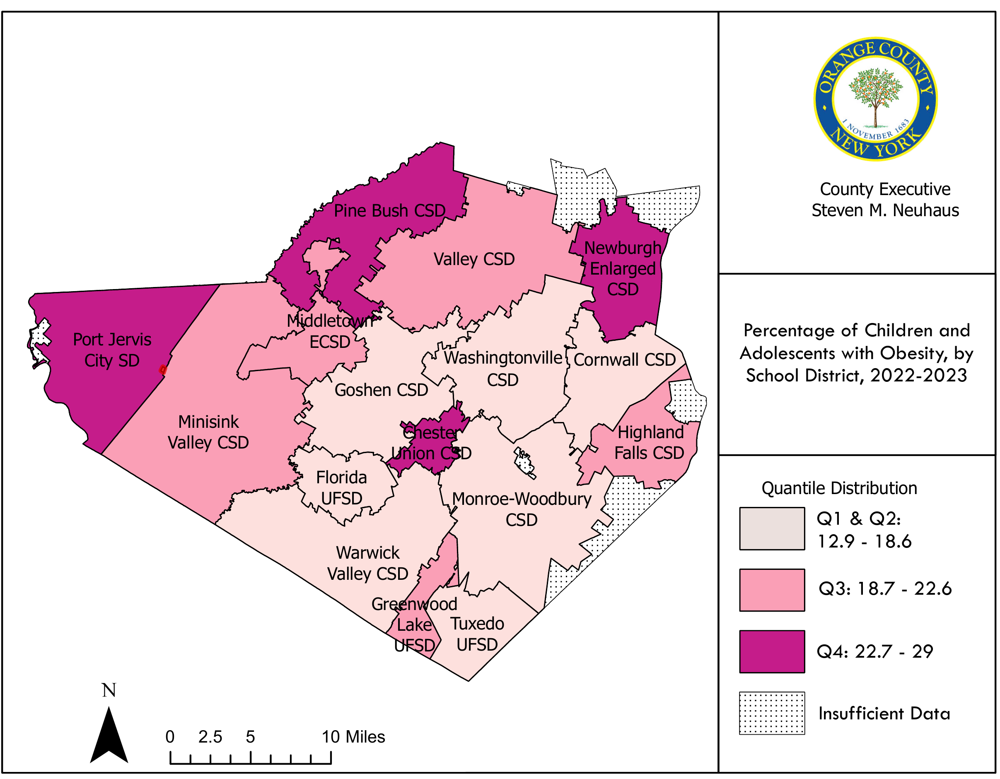

| 2020 | 2021 | 2022 | 2023 | Total 2020-2023 | ||||||
|---|---|---|---|---|---|---|---|---|---|---|
| Region | # | Rate | # | Rate | # | Rate | # | Rate | # | Average Rate |
| Orange County Total | 68.0 | 17.8 | 39.0 | 9.8 | 65.0 | 16.2 | 73.0 | 18.1 | 245.0 | 15.5 |
| Age Intervals | ||||||||||
| <1 | 0.0 | 0.0 | s | s | 0.0 | 0.0 | s | s | s | s |
| 1-9 | s | s | 0.0 | 0.0 | 0.0 | 0.0 | 0.0 | 0.0 | s | s |
| 10-19 | 0.0 | 0.0 | 0.0 | 0.0 | 0.0 | 0.0 | 0.0 | 0.0 | 0.0 | 0.0 |
| 20-24 | s | s | s | s | s | s | s | s | s | s |
| 25-34 | s | s | s | s | s | s | s | s | 14.0 | 7.5 |
| 35-44 | s | s | s | s | s | s | s | s | 30.0 | 15.7 |
| 45-54 | 28.0 | 53.5 | 34.0 | 63.7 | 21.0 | 40.1 | 32.0 | 62.1 | 115.0 | 54.9 |
| 55-64 | 84.0 | 172.5 | 91.0 | 177.1 | 99.0 | 193.4 | 98.0 | 190.3 | 372.0 | 183.3 |
| 65-74 | 154.0 | 488.4 | 147.0 | 439.2 | 159.0 | 469.7 | 147.0 | 421.9 | 607.0 | 454.8 |
| 75-84 | 196.0 | 1329.3 | 209.0 | 1369.6 | 230.0 | 1451.7 | 236.0 | 1439.3 | 871.0 | 1397.4 |
| 85+ | 365.0 | 5105.6 | 297.0 | 4359.3 | 295.0 | 4202.3 | 313.0 | 4665.4 | 1270.0 | 4583.1 |
| Race and Ethnicity | ||||||||||
| Non-Hispanic White | 686.0 | 284.4 | 635.0 | 256.2 | 656.0 | 270.4 | 660.0 | 275.9 | 2637.0 | 271.7 |
| Non-Hispanic Black | 66.0 | 171.6 | 72.0 | 181.2 | 74.0 | 176.4 | 85.0 | 200.1 | 297.0 | 182.3 |
| Hispanic | 63.0 | 78.5 | 70.0 | 82.0 | 61.0 | 68.2 | 74.0 | 79.1 | 268.0 | 76.9 |
| Other | 28.0 | 126.2 | 16.0 | 63.2 | 24.0 | 88.4 | 20.0 | 70.0 | 88.0 | 87.0 |
| ZIP Code | ||||||||||
| 10,940 | 111.0 | 224.6 | 138.0 | 270.9 | 127.0 | 244.9 | 125.0 | 235.4 | 501.0 | 244.0 |
| 10,950 | 58.0 | 433.4 | 48.0 | 333.0 | 46.0 | 317.2 | 43.0 | 291.3 | 195.0 | 343.7 |
| 12,550 | 153.0 | 573.8 | 115.0 | 429.0 | 127.0 | 463.4 | 113.0 | 413.9 | 508.0 | 470.0 |
| 12,771 | 33.0 | 229.0 | 55.0 | 370.6 | 46.0 | 318.3 | 52.0 | 362.5 | 186.0 | 320.1 |
9 Leading Health Issues
The Leading Health Issues section synthesizes information regarding major contributors to morbidity and mortality in Orange County. Indicators are organized into four subsections—Chronic Disease, Cancer, Communicable Disease, and Maternal Child Health—to align measures that are typically reported through different surveillance and reporting streams. The Chronic Disease subsection focuses on non-cancer, non-communicable conditions captured across mortality, healthcare utilization, and prevalence indicators.
9.1 Chronic Disease
9.1.1 Diseases of the Circulatory System
Across 2020–2023, the age-adjusted diseases of the circulatory system mortality rate in Orange County remained within a relatively narrow band, ranging from 186.4 to 198.4 per 100,000, with a most recent value of 193.6 per 100,000 in 2023 Figure 9.1. Sex-stratified trends show a persistent disparity across the full period: males experienced higher age-adjusted mortality than females each year, with 2023 rates of 238.7 per 100,000 for males compared with 157.7 per 100,000 for females Figure 9.4. Disparities were also evident by race and ethnicity. Over 2020–2023, diseases of the circulatory system mortality rate for Non-Hispanic White exceeded the rates reported for Non-Hispanic Black, Hispanic, and Other populations; in 2023, the rate was 275.9 per 100,000 among Non-Hispanic White residents compared with 200.1 per 100,000 among Non-Hispanic Black residents and 79.1 per 100,000 among Hispanic residents Table 9.1. Geographic variation was also present across zip code geographies in the workbook; in 2023, zip code 12550 had the highest listed circulatory disease mortality rate (413.9 per 100,000) compared with 235.4 per 100,000 in zip code 10940 Figure 9.3.
NoteSource
Special request from NYSDOH Bureau of Vital Records, July 2025
Note
s: Data are suppressed due to not meeting reporting criteria. Note: See Data Note section for more information regarding this request. This includes Circulatory System Diseases as a primary cause of death with ICD-10-CM codes of: I00–I09 (Rheumatic Heart Diseases), I10–I15 (Hypertensive Diseases), I20–I25 (Ischemic Heart Diseases), I26–I28 (Pulmonary Heart Diseases and Circulation), I30–I52 (Other Forms of Heart Disease), I60–I69 (Cerebrovascular Disease), I70–I79 (Disease of Arteries, Arterioles, and Capillaries), I80–I89 (Disease of Veins, Lymphatics, and Nodes), and I95–I99 (Other and Unspecified Disorders). Birth and death data for Orange County excludes events recorded in NYC. All rates use ACS 5-year population estimates, except for the ages under 1 year and 1–9 years, which are based on crude live births in Orange County.
| County | 2020 | 2021 | 2022 | 2023 |
|---|---|---|---|---|
| Orange | 198.4 | 186.4 | 187.1 | 193.6 |
NoteSource
Special request from NYSDOH Bureau of Vital Records, July 2025
Note
Note: See Data Note section for more information regarding this request. This includes Circulatory System Diseases as a primary cause of death with ICD-10-CM codes of: I00–I09 (Rheumatic Heart Diseases), I10–I15 (Hypertensive Diseases), I20–I25 (Ischemic Heart Diseases), I26–I28 (Pulmonary Heart Diseases and Circulation), I30–I52 (Other Forms of Heart Disease), I60–I69 (Cerebrovascular Disease), I70–I79 (Disease of Arteries, Arterioles, and Capillaries), I80–I89 (Disease of Veins, Lymphatics, and Nodes), and I95–I99 (Other and Unspecified Disorders). Birth and death data for Orange County excludes events recorded in NYC. All rates use ACS 5-year population estimates, except for the ages under 1 year and 1–9 years, which are based on crude live births in Orange County.
| Race and Ethnicity | 2020 | 2021 | 2022 | 2023 |
|---|---|---|---|---|
| Non-Hispanic White | 284.4 | 256.2 | 169.2 | 275.9 |
| Non-Hispanic Black | 171.6 | 181.2 | 217.1 | 200.1 |
| Non-Hispanic Asian/Pacific Islander | 78.5 | 82.0 | 103.3 | 79.1 |
| Hispanic | 126.2 | 63.2 | 135.9 | 70.0 |
NoteSource
Special request from NYSDOH Bureau of Vital Records, July 2025
Note
Note: See Data Note section for more information regarding this request. This includes Circulatory System Diseases as a primary cause of death with ICD-10-CM codes of: I00–I09 (Rheumatic Heart Diseases), I10–I15 (Hypertensive Diseases), I20–I25 (Ischemic Heart Diseases), I26–I28 (Pulmonary Heart Diseases and Circulation), I30–I52 (Other Forms of Heart Disease), I60–I69 (Cerebrovascular Disease), I70–I79 (Disease of Arteries, Arterioles, and Capillaries), I80–I89 (Disease of Veins, Lymphatics, and Nodes), and I95–I99 (Other and Unspecified Disorders). Birth and death data for Orange County excludes events recorded in NYC. All rates use ACS 5-year population estimates, except for the ages under 1 year and 1–9 years, which are based on crude live births in Orange County.
| ZIP Code | 2020 | 2021 | 2022 | 2023 |
|---|---|---|---|---|
| 10,940 | 224.6 | 270.9 | 244.9 | 235.4 |
| 10,950 | 433.4 | 333.0 | 317.2 | 291.3 |
| 12,550 | 573.8 | 429.0 | 463.4 | 413.9 |
| 12,771 | 229.0 | 370.6 | 318.3 | 362.5 |
NoteSource
Special request from NYSDOH Bureau of Vital Records, July 2025
Note
Note: See Data Note section for more information regarding this request. This includes Circulatory System Diseases as a primary cause of death with ICD-10-CM codes of: I00–I09 (Rheumatic Heart Diseases), I10–I15 (Hypertensive Diseases), I20–I25 (Ischemic Heart Diseases), I26–I28 (Pulmonary Heart Diseases and Circulation), I30–I52 (Other Forms of Heart Disease), I60–I69 (Cerebrovascular Disease), I70–I79 (Disease of Arteries, Arterioles, and Capillaries), I80–I89 (Disease of Veins, Lymphatics, and Nodes), and I95–I99 (Other and Unspecified Disorders). Birth and death data for Orange County excludes events recorded in NYC. All rates use ACS 5-year population estimates, except for the ages under 1 year and 1–9 years, which are based on crude live births in Orange County.
| Sex | 2020 | 2021 | 2022 | 2023 |
|---|---|---|---|---|
| Males | 264.8 | 220.2 | 219.7 | 238.7 |
| Females | 149.1 | 159.2 | 158.6 | 157.7 |
NoteSource
Vital Statistics of NYS, July 2025
Note
Note: See Data Note section for more information regarding this request. This includes Circulatory System Diseases as a primary cause of death with ICD-10-CM codes of: I00–I09 (Rheumatic Heart Diseases), I10–I15 (Hypertensive Diseases), I20–I25 (Ischemic Heart Diseases), I26–I28 (Pulmonary Heart Diseases and Circulation), I30–I52 (Other Forms of Heart Disease), I60–I69 (Cerebrovascular Disease), I70–I79 (Disease of Arteries, Arterioles, and Capillaries), I80–I89 (Disease of Veins, Lymphatics, and Nodes), and I95–I99 (Other and Unspecified Disorders). Birth and death data for Orange County excludes events recorded in NYC. All rates use ACS 5-year population estimates, except for the ages under 1 year and 1–9 years, which are based on crude live births in Orange County.
9.1.2 Diseases of the Heart
Diseases of the heart mortality in Orange County ranged from 157.5 to 179.8 per 100,000 during 2020–2023, with a most recent value of 167.4 per 100,000 in 2023 (676 deaths) Table 9.6. The age-adjusted heart disease mortality rate ranged from 144.8 to 161.2 per 100,000 over the same period and was 155.8 per 100,000 in 2023 Figure 9.5. A consistent sex disparity was present across 2020–2023: in 2023, the age-adjusted heart disease mortality rate was 202.9 per 100,000 among males and 119.2 per 100,000 among females Figure 9.8. By race and ethnicity, the heart disease mortality rate in 2023 was highest among Non-Hispanic White residents (196.9 per 100,000) compared with 113.9 per 100,000 among Non-Hispanic Black residents and 81.2 per 100,000 among Hispanic residents ?tbl-heartdz-mortal-rande-zip. Zip code variation was also observed; in 2023, zip code 12550 had the highest listed heart disease mortality rate (315.0 per 100,000) compared with 199.6 per 100,000 in zip code 10940 Figure 9.7. As with other mortality indicators, rates increased substantially with age; in 2023, the heart disease mortality rate among residents age 85+ was 3,651.8 per 100,000 ?tbl-heartdz-mortal-rande-zip.
| 2020 | 2021 | 2022 | 2023 | Total 2020-2023 | ||||||
|---|---|---|---|---|---|---|---|---|---|---|
| Region | # | Rate | # | Rate | # | Rate | # | Rate | # | Average Rate |
| Orange County Total | 687.0 | 179.8 | 628.0 | 157.7 | 632.0 | 157.5 | 676.0 | 167.4 | 2623.0 | 165.6 |
| Age Intervals | ||||||||||
| <1 | 0.0 | 0.0 | s | s | 0.0 | 0.0 | s | s | s | s |
| 1-9 | s | s | 0.0 | 0.0 | 0.0 | 0.0 | 0.0 | 0.0 | s | s |
| 10-19 | 0.0 | 0.0 | 0.0 | 0.0 | 0.0 | 0.0 | 0.0 | 0.0 | 0.0 | 0.0 |
| 20-24 | s | s | s | s | 0.0 | 0.0 | s | s | s | s |
| 25-34 | s | s | s | s | s | s | s | s | s | s |
| 35-44 | s | s | s | s | s | s | s | s | 20.0 | 10.5 |
| 45-54 | 24.0 | 45.8 | 27.0 | 50.6 | 14.0 | 26.7 | 30.0 | 58.2 | 95.0 | 45.4 |
| 55-64 | 66.0 | 135.5 | 69.0 | 134.3 | 71.0 | 138.7 | 81.0 | 157.3 | 287.0 | 141.4 |
| 65-74 | 130.0 | 412.3 | 122.0 | 364.5 | 131.0 | 387.0 | 120.0 | 344.4 | 503.0 | 377.1 |
| 75-84 | 155.0 | 1051.2 | 167.0 | 1094.4 | 174.0 | 1098.2 | 195.0 | 1189.2 | 691.0 | 1108.3 |
| 85+ | 300.0 | 4196.4 | 234.0 | 3434.6 | 234.0 | 3333.3 | 245.0 | 3651.8 | 1013.0 | 3654.0 |
| Race and Ethnicity | ||||||||||
| Non-Hispanic White | 565.0 | 234.3 | 507.0 | 204.5 | 518.0 | 213.5 | 532.0 | 222.4 | 2122.0 | 218.7 |
| Non-Hispanic Black | 46.0 | 119.6 | 58.0 | 146.0 | 49.0 | 116.8 | 65.0 | 153.0 | 218.0 | 133.9 |
| Hispanic | 51.0 | 63.5 | 50.0 | 58.6 | 46.0 | 51.4 | 61.0 | 65.2 | 208.0 | 59.7 |
| Other | 25.0 | 112.7 | 13.0 | 51.4 | 19.0 | 70.0 | 18.0 | 63.0 | 75.0 | 74.3 |
| ZIP Code | ||||||||||
| 10,940 | 88.0 | 178.0 | 113.0 | 221.9 | 95.0 | 183.2 | 106.0 | 199.6 | 402.0 | 195.7 |
| 10,950 | 43.0 | 321.3 | 30.0 | 208.1 | 34.0 | 234.5 | 36.0 | 243.9 | 143.0 | 251.9 |
| 12,550 | 125.0 | 468.8 | 94.0 | 350.7 | 102.0 | 372.1 | 86.0 | 315.0 | 407.0 | 376.7 |
| 12,771 | 29.0 | 201.3 | 46.0 | 310.0 | 33.0 | 228.3 | 40.0 | 278.8 | 148.0 | 254.6 |
NoteSource
Special request from NYSDOH Bureau of Vital Records, July 2025
Note
s: Data are suppressed due to not meeting reporting criteria. Note: See Data Note section for more information regarding this request. This includes Diseases of the Heart as a primary cause of death with ICD-10-CM codes of: I00–I09 (Acute Rheumatic Fever), I11 (Hypertensive Heart Disease), I13 (Hypertensive Heart Disease and Chronic Kidney Disease), and I20–I51 (Ischemic Heart Diseases, Pulmonary Circulation Diseases, and Other forms of Heart Disease). Birth and death data for Orange County excludes events recorded in NYC. All rates use ACS 5-year population estimates, except for the ages under 1 year and 1–9 years, which are based on crude live births in Orange County.
| County | 2020 | 2021 | 2022 | 2023 |
|---|---|---|---|---|
| Orange | 161.2 | 147.6 | 144.8 | 155.8 |
NoteSource
Special request from NYSDOH Bureau of Vital Records, July 2025
Note
Note: See Data Note section for more information regarding this request. This includes Diseases of the Heart as a primary cause of death with ICD-10-CM codes of: I00–I09 (Acute Rheumatic Fever), I11 (Hypertensive Heart Disease), I13 (Hypertensive Heart Disease and Chronic Kidney Disease), and I20–I51 (Ischemic Heart Diseases, Pulmonary Circulation Diseases, and Other forms of Heart Disease). Birth and death data for Orange County excludes events recorded in NYC. All rates use ACS 5-year population estimates, except for the ages under 1 year and 1–9 years, which are based on crude live births in Orange County.
| Race and Ethnicity | Orange | NYS excl NYC | NYS |
|---|---|---|---|
| Total | 157.6 | 166.8 | 170.6 |
| Non-Hispanic White | 163.4 | 168.5 | 169.2 |
| Non-Hispanic Black | 156.6 | 200.2 | 217.1 |
| Non-Hispanic Asian/Pacific Islander | 97.7 | 88.0 | 103.3 |
| Hispanic | 112.1 | 109.6 | 135.9 |
NoteSource
NYS County Health Indicators by Race and Ethnicity, November 2025
Note
Note: This includes Diseases of the Heart as a primary cause of death with ICD-10-CM codes of: I00–I09 (Acute Rheumatic Fever), I11 (Hypertensive Heart Disease), I13 (Hypertensive Heart Disease and Chronic Kidney Disease), and I20–I51 (Ischemic Heart Diseases, Pulmonary Circulation Diseases, and Other forms of Heart Disease). Standard population used for age-adjustment using the 2000 projected US. population.
| Zip Code | 2020 | 2021 | 2022 | 2023 |
|---|---|---|---|---|
| 10940 | 178.0 | 221.9 | 183.2 | 199.6 |
| 10950 | 321.3 | 208.1 | 234.5 | 243.9 |
| 12550 | 468.8 | 350.7 | 372.1 | 315.0 |
| 12771 | 201.3 | 310.0 | 228.3 | 278.8 |
NoteSource
Special request from NYSDOH Bureau of Vital Records, July 2025
Note
Note: See Data Note section for more information regarding this request. This includes Diseases of the Heart as a primary cause of death with ICD-10-CM codes of: I00–I09 (Acute Rheumatic Fever), I11 (Hypertensive Heart Disease), I13 (Hypertensive Heart Disease and Chronic Kidney Disease), and I20–I51 (Ischemic Heart Diseases, Pulmonary Circulation Diseases, and Other forms of Heart Disease). Birth and death data for Orange County excludes events recorded in NYC. All rates use ACS 5-year population estimates, except for the ages under 1 year and 1–9 years, which are based on crude live births in Orange County.
| Sex | 2020 | 2021 | 2022 | 2023 |
|---|---|---|---|---|
| Males | 222.8 | 178.9 | 178.9 | 202.9 |
| Females | 116.4 | 122.5 | 116.5 | 119.2 |
NoteSource
Special request from NYSDOH Bureau of Vital Records, July 2025
Note
Note: See Data Note section for more information regarding this request. This includes Diseases of the Heart as a primary cause of death with ICD-10-CM codes of: I00–I09 (Acute Rheumatic Fever), I11 (Hypertensive Heart Disease), I13 (Hypertensive Heart Disease and Chronic Kidney Disease), and I20–I51 (Ischemic Heart Diseases, Pulmonary Circulation Diseases, and Other forms of Heart Disease). Birth and death data for Orange County excludes events recorded in NYC. All rates use ACS 5-year population estimates, except for the ages under 1 year and 1–9 years, which are based on crude live births in Orange County.
9.1.3 Cerebrovascular Disease
Cerebrovascular disease mortality ranged from 22.8 to 30.4 per 100,000 during 2020–2023, with a most recent value of 22.8 per 100,000 in 2023 (92 deaths) Table 9.12. The age-adjusted cerebrovascular mortality rate ranged from 19.9 to 25.3 per 100,000 and was 19.9 per 100,000 in 2023 Figure 9.10. Sex patterns varied by year; in 2023, the age-adjusted rate was 22.6 per 100,000 for females and 19.3 per 100,000 for males Figure 9.11.
Hospitalization disparities by race and ethnicity were evident for cerebrovascular diseases from 2020–2022. During 2020–2022, the Orange County total cerebrovascular hospitalization rate was 21.9 per 10,000, and the rate was higher among Non-Hispanic Black residents (29.4 per 10,000) than among Non-Hispanic White residents (17.6 per 10,000) Figure 9.9.
| Race and Ethnicity | Orange | NYS excl NYC | NYS |
|---|---|---|---|
| Total | 21.9 | 19.6 | 19.8 |
| Non-Hispanic White | 17.6 | 16.7 | 15.4 |
| Non-Hispanic Black | 29.4 | 33.1 | 27.0 |
| Non-Hispanic Asian/Pacific Islander | 16.0 | 11.2 | 11.2 |
| Hispanic | 15.4 | 15.4 | 16.4 |
NoteSource
NYS County Health Indicators by Race and Ethnicity, August 2025 https://www.health.ny.gov/community/health_equity/reports/county/orange.htm
Note
Note: Cerebrovascular Disease is also known as stroke. The ICD-10-CM codes used for Cerebrovascular Disease are: I60-I69. Standard population used for age-adjustment using the 2000 projected US. population.
| Table 'tbl-cerebrovascdz-mortal-rande-zip' not found in workbook. |
| County | 2020 | 2021 | 2022 | 2023 |
|---|---|---|---|---|
| Orange | 24.3 | 22.9 | 28.3 | 21.4 |
NoteSource
Special request from NYSDOH Bureau of Vital Records, July 2025
Note
Note: See Data Note section for more information regarding this request. Cerebrovascular Disease is also known as stroke. This includes Cerebrovascular Disease as a primary cause of death with ICD-10-CM codes of: I60–I69. Birth and death data for Orange County excludes events recorded in NYC. All rates use ACS 5-year population estimates, except for the ages under 1 year and 1–9 years, which are based on crude live births in Orange County.
Age-Adjusted Rate per 100,000 by Sex, 2020–2023 –>
| Sex | 2020 | 2021 | 2022 | 2023 |
|---|---|---|---|---|
| Males | 24.7 | 24.3 | 29.3 | 19.3 |
| Females | 23.5 | 22.0 | 26.8 | 22.6 |
NoteSource
Special request from NYSDOH Bureau of Vital Records, July 2025
Note
Note: See Data Note section for more information regarding this request. Cerebrovascular Disease is also known as stroke. This includes Cerebrovascular Disease as a primary cause of death with ICD-10-CM codes of: I60–I69. Birth and death data for Orange County excludes events recorded in NYC. All rates use ACS 5-year population estimates, except for the ages under 1 year and 1–9 years, which are based on crude live births in Orange County.
9.1.4 Other Diseases of the Circulatory System
Other diseases of the circulatory system mortality ranged from 16.2 to 18.6 per 100,000 during 2020–2023, with a most recent value of 18.1 per 100,000 in 2023 (73 deaths) Table 9.15. As with other mortality measures in this subsection, suppression (“s”) was used in some stratified rows where small counts limited stable rate estimation Table 9.15.
| 2020 | 2021 | 2022 | 2023 | Total 2020-2023 | ||||||
|---|---|---|---|---|---|---|---|---|---|---|
| Region | # | Rate | # | Rate | # | Rate | # | Rate | # | Average Rate |
| Orange County Total | 68.0 | 17.8 | 39.0 | 9.8 | 65.0 | 16.2 | 73.0 | 18.1 | 245.0 | 15.5 |
| Age Intervals | ||||||||||
| <1 | 0.0 | 0.0 | s | s | 0.0 | 0.0 | s | s | s | s |
| 1-9 | s | s | 0.0 | 0.0 | 0.0 | 0.0 | 0.0 | 0.0 | s | s |
| 10-19 | 0.0 | 0.0 | 0.0 | 0.0 | 0.0 | 0.0 | 0.0 | 0.0 | 0.0 | 0.0 |
| 20-24 | s | s | s | s | s | s | s | s | s | s |
| 25-34 | s | s | s | s | s | s | s | s | 14.0 | 7.5 |
| 35-44 | s | s | s | s | s | s | s | s | 30.0 | 15.7 |
| 45-54 | 28.0 | 53.5 | 34.0 | 63.7 | 21.0 | 40.1 | 32.0 | 62.1 | 115.0 | 54.9 |
| 55-64 | 84.0 | 172.5 | 91.0 | 177.1 | 99.0 | 193.4 | 98.0 | 190.3 | 372.0 | 183.3 |
| 65-74 | 154.0 | 488.4 | 147.0 | 439.2 | 159.0 | 469.7 | 147.0 | 421.9 | 607.0 | 454.8 |
| 75-84 | 196.0 | 1329.3 | 209.0 | 1369.6 | 230.0 | 1451.7 | 236.0 | 1439.3 | 871.0 | 1397.4 |
| 85+ | 365.0 | 5105.6 | 297.0 | 4359.3 | 295.0 | 4202.3 | 313.0 | 4665.4 | 1270.0 | 4583.1 |
| Race and Ethnicity | ||||||||||
| Non-Hispanic White | 686.0 | 284.4 | 635.0 | 256.2 | 656.0 | 270.4 | 660.0 | 275.9 | 2637.0 | 271.7 |
| Non-Hispanic Black | 66.0 | 171.6 | 72.0 | 181.2 | 74.0 | 176.4 | 85.0 | 200.1 | 297.0 | 182.3 |
| Hispanic | 63.0 | 78.5 | 70.0 | 82.0 | 61.0 | 68.2 | 74.0 | 79.1 | 268.0 | 76.9 |
| Other | 28.0 | 126.2 | 16.0 | 63.2 | 24.0 | 88.4 | 20.0 | 70.0 | 88.0 | 87.0 |
| ZIP Code | ||||||||||
| 10,940 | 111.0 | 224.6 | 138.0 | 270.9 | 127.0 | 244.9 | 125.0 | 235.4 | 501.0 | 244.0 |
| 10,950 | 58.0 | 433.4 | 48.0 | 333.0 | 46.0 | 317.2 | 43.0 | 291.3 | 195.0 | 343.7 |
| 12,550 | 153.0 | 573.8 | 115.0 | 429.0 | 127.0 | 463.4 | 113.0 | 413.9 | 508.0 | 470.0 |
| 12,771 | 33.0 | 229.0 | 55.0 | 370.6 | 46.0 | 318.3 | 52.0 | 362.5 | 186.0 | 320.1 |
NoteSource
Special request from NYSDOH Bureau of Vital Records, July 2025
Note
s: Data are suppressed due to not meeting reporting criteria. Note: See Data Note section for more information regarding this request. This includes Other Diseases of the Circulatory System as a primary cause of death with ICD-10-CM codes of: I71–I78 (Diseases of Arteries, Arterioles, and Capillaries), and I80–I89 (Diseases of Veins, Lymphatics, and Lymph Nodes), and I95–I99 (Other and Unspecified Disorders of the Circulatory System). Birth and death data for Orange County excludes events recorded in NYC. All rates use ACS 5-year population estimates, except for the ages under 1 year and 1–9 years, which are based on crude live births in Orange County.
| County | 2020 | 2021 | 2022 | 2023 |
|---|---|---|---|---|
| Orange | 198.4 | 186.4 | 187.1 | 193.6 |
NoteSource
Special request from NYSDOH Bureau of Vital Records, July 2025
Note
Note: See Data Note section for more information regarding this request. This includes Other Diseases of the Circulatory System as a primary cause of death with ICD-10-CM codes of: I71–I78 (Diseases of Arteries, Arterioles, and Capillaries), and I80–I89 (Diseases of Veins, Lymphatics, and Lymph Nodes), and I95–I99 (Other and Unspecified Disorders of the Circulatory System). Birth and death data for Orange County excludes events recorded in NYC. All rates use ACS 5-year population estimates, except for the ages under 1 year and 1–9 years, which are based on crude live births in Orange County.
| Race and Ethnicity | 2020 | 2021 | 2022 | 2023 |
|---|---|---|---|---|
| Non-Hispanic White | 284.4 | 256.2 | 270.4 | 275.9 |
| Non-Hispanic Black | 171.6 | 181.2 | 176.4 | 200.1 |
| Hispanic | 78.5 | 82.0 | 68.2 | 79.1 |
| Other | 126.2 | 63.2 | 88.4 | 70.0 |
NoteSource
Special request from NYSDOH Bureau of Vital Records, July 2025
Note
Note: See Data Note section for more information regarding this request. This includes Other Diseases of the Circulatory System as a primary cause of death with ICD-10-CM codes of: I71–I78 (Diseases of Arteries, Arterioles, and Capillaries), and I80–I89 (Diseases of Veins, Lymphatics, and Lymph Nodes), and I95–I99 (Other and Unspecified Disorders of the Circulatory System). Birth and death data for Orange County excludes events recorded in NYC. All rates use ACS 5-year population estimates, except for the ages under 1 year and 1–9 years, which are based on crude live births in Orange County.
| ZIP Code | 2020 | 2021 | 2022 | 2023 |
|---|---|---|---|---|
| 10,940 | 224.6 | 270.9 | 244.9 | 235.4 |
| 10,950 | 433.4 | 333.0 | 317.2 | 291.3 |
| 12,550 | 573.8 | 429.0 | 463.4 | 413.9 |
| 12,771 | 229.0 | 370.6 | 318.3 | 362.5 |
NoteSource
Special request from NYSDOH Bureau of Vital Records, July 2025
Note
Note: See Data Note section for more information regarding this request. This includes Other Diseases of the Circulatory System as a primary cause of death with ICD-10-CM codes of: I71–I78 (Diseases of Arteries, Arterioles, and Capillaries), and I80–I89 (Diseases of Veins, Lymphatics, and Lymph Nodes), and I95–I99 (Other and Unspecified Disorders of the Circulatory System). Birth and death data for Orange County excludes events recorded in NYC. All rates use ACS 5-year population estimates, except for the ages under 1 year and 1–9 years, which are based on crude live births in Orange County.
| Sex | 2020 | 2021 | 2022 | 2023 |
|---|---|---|---|---|
| Males | 264.8 | 220.2 | 219.7 | 238.7 |
| Females | 149.1 | 159.2 | 158.6 | 157.7 |
9.1.5 Chronic Lower Respiratory Disease
Chronic lower respiratory disease (CLRD) mortality declined across 2020–2023, ranging from 20.3 to 35.6 per 100,000, with 20.3 per 100,000 in 2023 (82 deaths) Table 9.21. The age-adjusted CLRD mortality rate ranged from 20.4 to 32.8 per 100,000 and was 20.4 per 100,000 in 2023 Figure 9.17. In 2023, the age-adjusted CLRD mortality rate was higher among males (21.8 per 100,000) than females (19.7 per 100,000) Figure 9.18.
The Orange County CLRD hospitalization (2020–2022) rate was 11.9 per 10,000, with a higher rate among Non-Hispanic Black residents (22.5 per 10,000) than among Non-Hispanic White residents (11.7 per 10,000) Figure 9.16.
| Region/County | Total | Non-Hispanic White | Non-Hispanic Black | Non-Hispanic Asian/Pacific Islander | Hispanic |
|---|---|---|---|---|---|
| Orange | 13.8 | 11.7 | 22.5 | 2.9 | 10.8 |
| NYS excl NYC | 12.0 | 9.8 | 24.0 | 4.1 | 9.9 |
| NYS | 14.3 | 9.1 | 24.5 | 4.4 | 16.6 |
NoteSource
NYS County Health Indicators by Race and Ethnicity, August 2025 sourced from NY Statewide Planning and Research Cooperative System https://www.health.ny.gov/community/health_equity/reports/county/orange.htm
Note
Note: The ICD-10-CM codes used for CLRD are: J40-J47. The 2018 population estimates are also used to calculate rates for 2019 and 2020. Later years are from the most recent Vintage estimates.
| 2020 | 2021 | 2022 | 2023 | Total 2020-2023 | ||||||
|---|---|---|---|---|---|---|---|---|---|---|
| Region | # | Rate | # | Rate | # | Rate | # | Rate | # | Average Rate |
| Orange County Total | 155 | 40.6 | 117 | 29.4 | 122 | 30.4 | 99 | 24.5 | 493 | 31.2 |
| Age Intervals | ||||||||||
| <1 | 0 | 0.0 | 0 | 0.0 | 0 | 0.0 | 0 | 0.0 | 0 | 0.0 |
| 1-9 | 0 | 0.0 | 0 | 0.0 | 0 | 0.0 | s | s | s | s |
| 10-19 | 0 | 0.0 | 0 | 0.0 | 0 | 0.0 | 0 | 0.0 | 0 | 0.0 |
| 20-24 | 0 | 0.0 | 0 | 0.0 | 0 | 0.0 | s | s | s | s |
| 25-34 | 0 | 0.0 | 0 | 0.0 | s | s | 0 | 0.0 | s | s |
| 35-44 | s | s | 0 | 0.0 | s | s | s | s | s | s |
| 45-54 | s | s | s | s | s | s | s | s | 12 | 5.7 |
| 55-64 | s | s | 13 | 25.3 | s | s | s | s | 38 | 18.7 |
| 65-74 | 30 | 95.1 | 28 | 83.7 | 22 | 65.0 | 24 | 68.9 | 104 | 78.2 |
| 75-84 | 50 | 339.1 | 41 | 268.7 | 44 | 277.7 | 31 | 189.1 | 166 | 268.6 |
| 85+ | 60 | 839.3 | 34 | 499.0 | 43 | 612.5 | 28 | 417.3 | 165 | 592.1 |
| Race and Ethnicity | ||||||||||
| Non-Hispanic White | 142 | 58.9 | 102 | 41.1 | 104 | 42.9 | 87 | 36.4 | 435 | 44.8 |
| Non-Hispanic Black | s | s | s | s | 10 | 23.8 | s | s | 26 | 16.0 |
| Hispanic | s | s | s | s | s | s | s | s | 22 | 6.3 |
| Other | s | s | s | s | s | s | s | s | s | s |
| ZIP Code | ||||||||||
| 10,940 | 23 | 46.5 | 12 | 23.6 | 19 | 36.6 | 12 | 22.6 | 66 | 32.3 |
| 10,950 | 14 | 104.6 | s | s | s | s | s | s | 30 | 53.6 |
| 12,550 | 16 | 60.0 | 20 | 74.6 | 14 | 51.1 | s | s | 58 | 53.7 |
| 12,771 | s | s | s | s | 12 | 83.0 | s | s | 39 | 67.2 |
NoteSource
Special request from NYSDOH Bureau of Vital Records, July 2025
Note
s: Data are suppressed due to not meeting reporting criteria. Note: This includes Chronic Lower Respiratory Disease as a primary cause of death with ICD-10-CM codes of: J40–J47. See Data Note section for more information regarding this request. Birth and death data for Orange County excludes events recorded in NYC. All rates use ACS 5-year population estimates, except for the ages under 1 year and 1-9 years, which are based on crude live births in Orange County.
| County | 2020 | 2021 | 2022 | 2023 |
|---|---|---|---|---|
| Orange | 37.9 | 26.5 | 29.0 | 22.9 |
NoteSource
Special request from NYSDOH Bureau of Vital Records, July 2025
Note
Note: This includes Chronic Lower Respiratory Disease as a primary cause of death with ICD-10-CM codes of: J40-J47. See Data Note section for more information regarding this request. Birth and death data for Orange County excludes events recorded in NYC. All rates use ACS 5-year population estimates, except for the ages under 1 year and 1-9 years, which are based on crude live births in Orange County.
| Sex | 2020 | 2021 | 2022 | 2023 |
|---|---|---|---|---|
| Males | 40 | 33 | 29 | 26 |
| Females | 37 | 24 | 30 | 22 |
NoteSource
Special request from NYSDOH Bureau of Vital Records, July 2025
Note
Note: The ICD-10-CM codes used for CLRD are: J40-J47. See Data Note section for more information regarding this request. Birth and death data for Orange County excludes events recorded in NYC. All rates use ACS 5-year population estimates, except for the ages under 1 year and 1-9 years, which are based on crude live births in Orange County.
9.1.6 Asthma
The asthma quality indicator (QI) rate in Orange County ranged from 55.6 to 59.1 per 10,000 during 2021– 2024, with 58.1 per 10,000 in 2024 Figure 9.21. In 2024, Orange County’s value (58.1 per 10,000) was higher than Mid-Hudson (52.9 per 10,000) and higher than New York State excluding NYC (56.8 per 10,000), while New York State was 60.6 per 10,000 Figure 9.21. Asthma hospitalizations (2020–2022) showed substantial race and ethnicity disparities. For 2020–2022, the total Orange County asthma hospitalization rate was 7.2 per 10,000, and the rate among Non-Hispanic Black residents (24.0 per 10,000) was notably higher than among Non-Hispanic White residents (4.7 per 10,000) Figure 9.19. A similar pattern was observed for child asthma hospitalizations (2020–2022), where the Orange County total was 6.9 per 10,000, and the Non-Hispanic Black rate (21.5 per 10,000) exceeded the NonHispanic White rate (5.1 per 10,000) Figure 9.20.
| Region/County | Total | Non-Hispanic White | Non-Hispanic Black | Non-Hispanic Asian/Pacific Islander | Hispanic |
|---|---|---|---|---|---|
| Orange | 5.1 | 3.4 | 10.8 | 1.8* | 5.1 |
| NYS excl NYC | 4.2 | 2.4 | 11.9 | 2.4 | 5.4 |
| NYS | 6.6 | 2.3 | 13.8 | 2.4 | 9.9 |
NoteSource
NYS County Health Indicators by Race and Ethnicity, August 2025 sourced from NY Statewide Planning and Research Cooperative System https://www.health.ny.gov/community/health_equity/reports/county/
Note
*: The rate or percentage is unstable. Note: The ICD-10-CM code used for asthma is: J45. The 2018 population estimates are also used to calculate rates for 2019 and 2020. Later years are from the most recent Vintage estimates.
| Region/County | Total | Non-Hispanic White | Non-Hispanic Black | Non-Hispanic Asian/Pacific Islander | Hispanic |
|---|---|---|---|---|---|
| Orange | 9.5 | 6.5 | 17.9 | s | 8.6 |
| NYS excl NYC | 8.5 | 4.6 | 22.2 | 5.4 | 9.2 |
| NYS | 13.4 | 4.5 | 26.7 | 5.4 | 16.1 |
NoteSource
NYS County Health Indicators by Race and Ethnicity, August 2025 sourced from NY Statewide Planning and Research Cooperative System https://www.health.ny.gov/community/health_equity/reports/county/
Note
Note: The ICD-10-CM code used for asthma is: J45. The 2018 population estimates are also used to calculate rates for 2019 and 2020. Later years are from the most recent Vintage estimates.
| Region/County | 2021 | 2022 | 2023 | 2024 |
|---|---|---|---|---|
| Orange | 5.6 | 9.4 | 9.5 | 7.1 |
| Mid-Hudson | 5.9 | 10.3 | 10.2 | 9.3 |
| NYS excl NYC | 6.5 | 10.0 | 10.1 | 9.9 |
NoteSource
Special access to Statewide Planning and Research Cooperative System data product developed by NYSDOH Division of Science, November 2025
Note
Note: The number of potentially preventable hospitalizations due to asthma per 10,000 population, ages 2 through 17 years. Lower estimates are better. The Pediatric Quality Indicator is developed by the federal Agency for Healthcare Research and Quality (AHRQ). The rates were calculated using SAS QI software v2023. For more information, visit AHRQ PDI resources page.
9.2 Pneumonia and Influenza
Pneumonia mortality ranged from 15.3 to 19.9 per 100,000 during 2020–2023, with 17.4 per 100,000 in 2023 (70 deaths) Table 9.28. The age-adjusted pneumonia mortality rate ranged from 14.4 to 18.9 per 100,000 and was 17.4 per 100,000 in 2023 Figure 9.23. In 2023, males had higher age-adjusted pneumonia mortality (21.6 per 100,000) than females (14.5 per 100,000) Figure 9.24. Potentially preventable community acquired pneumonia admissions in Orange County ranged from 81.4 to 104.3 per 10,000 during 2021–2024, with 84.7 per 10,000 in 2024 Figure 9.22. In 2024, Orange County (84.7 per 10,000) was lower than the Mid-Hudson region (92.2 per 10,000) and substantially lower than New York State excluding NYC (111.6 per 10,000) Figure 9.22. While key indicators are summarized here, during the respiratory disease season, more data offering insights into respiratory health trends in Orange County are found in the Respiratory Illness Dashboard2 that can be accessed via the OCDOH website.
| Region/County | 2021 | 2022 | 2023 | 2024 |
|---|---|---|---|---|
| Orange | 12.2 | 13.9 | 15.7 | 17.4 |
| Mid-Hudson | 7.9 | 8.6 | 10.4 | 10.6 |
| NYS excl NYC | 8.8 | 9.4 | 11.2 | 11.3 |
NoteSource
Special access to Statewide Planning and Research Cooperative System data product developed by NYSDOH Division of Science, November 2025
Note
Note: The number of potentially preventable hospitalizations due to community-acquired bacterial pneumonia per 10,000 population, ages 18 years or older. Lower estimates are better. The Prevention Quality Indicator (PQI) is developed by the federal Agency for Healthcare Research and Quality (AHRQ). The rates were calculated using SAS QI software v2023. For more information, visit AHRQ PQI resources page. The rates were age-adjusted to the U.S. 2000 standard population using appropriate age distributions.
| 2020 | 2021 | 2022 | 2023 | Total 2020-2023 | ||||||
|---|---|---|---|---|---|---|---|---|---|---|
| Region | # | Rate | # | Rate | # | Rate | # | Rate | # | Average Rate |
| Orange County Total | 68 | 17.8 | 39 | 9.8 | 65 | 16.2 | 73 | 18.1 | 245 | 15.5 |
| Age Intervals | ||||||||||
| <1 | s | 0.0 | 0 | 0.0 | 0 | 0.0 | 0 | 0.0 | 0 | 0.0 |
| 1-9 | s | s | 0 | 0.0 | 0 | 0.0 | 0 | 0.0 | s | s |
| 10-19 | 0 | 0.0 | 0 | 0.0 | 0 | 0.0 | 0 | 0.0 | 0 | 0.0 |
| 20-24 | 0 | 0.0 | 0 | 0.0 | 0 | 0.0 | 0 | 0.0 | 0 | 0.0 |
| 25-34 | 0 | 0.0 | 0 | 0.0 | s | s | 0 | 0.0 | s | s |
| 35-44 | 0 | 0.0 | s | s | s | s | s | s | s | s |
| 45-54 | s | s | 0 | 0.0 | s | s | s | s | s | s |
| 55-64 | s | s | s | s | s | s | s | s | 21 | 10.3 |
| 65-74 | 14 | 44.4 | s | s | 16 | 47.3 | s | s | 44 | 33.1 |
| 75-84 | 23 | 156.0 | 13 | 85.2 | 21 | 132.5 | 26 | 158.6 | 83 | 133.1 |
| 85+ | 23 | 321.7 | 13 | 190.8 | 18 | 256.4 | 29 | 432.3 | 83 | 300.3 |
| Race and Ethnicity | ||||||||||
| Non-Hispanic White | 56 | 23.2 | 31 | 12.5 | 50 | 20.6 | 59 | 24.7 | 196 | 20.2 |
| Non-Hispanic Black | s | s | s | s | s | s | s | s | 18 | 11.0 |
| Hispanic | s | s | s | s | s | s | s | s | 26 | 7.5 |
| Other | s | s | s | s | s | s | s | s | s | s |
| ZIP Code | ||||||||||
| 10,940 | s | s | s | s | s | s | 11 | 20.7 | 38 | 18.5 |
| 10,950 | s | s | s | s | s | s | s | s | 17 | 29.8 |
| 12,550 | s | s | s | s | 14 | 51.1 | s | s | 35 | 32.2 |
| 12,771 | s | s | s | s | s | s | s | s | 14 | 24.3 |
NoteSource
Special request from NYSDOH Bureau of Vital Records, July 2025
Note
s: Data are suppressed due to not meeting reporting criteria. Note: See Data Note section for more information regarding this request. This includes Pneumonia and Influenza as a primary cause of death with ICD-10-CM codes of: J10–J18. Birth and death data for Orange County excludes events recorded in NYC. All rates use ACS 5-year population estimates, except for the ages under 1 year and 1-9 years, which are based on crude live births in Orange County.
| County | 2020 | 2021 | 2022 | 2023 |
|---|---|---|---|---|
| Orange | 16.8 | 9.3 | 15.0 | 17.4 |
NoteSource
Special request from NYSDOH Bureau of Vital Records, July 2025
Note
Note: See Data Note section for more information regarding this request. This includes Pneumonia and Influenza as a primary cause of death with ICD-10-CM codes of: J10–J18. Birth and death data for Orange County excludes events recorded in NYC. All rates use ACS 5- year population estimates, except for the ages under 1 year and 1-9 years, which are based on crude live births in Orange County.
| Year | 2020 | 2021 | 2022 | 2023 |
|---|---|---|---|---|
| Males | 23.3 | 9.4 | 23.9 | 21.7 |
| Females | 12.3 | 8.8 | 9.6 | 14.1 |
NoteSource
Special request from NYSDOH Bureau of Vital Records, July 2025
Note
Note: See Data Note section for more information regarding this request. This includes Pneumonia and Influenza as a primary cause of death with ICD-10-CM codes of: J10–J18. Birth and death data for Orange County excludes events recorded in NYC. All rates use ACS 5- year population estimates, except for the ages under 1 year and 1-9 years, which are based on crude live births in Orange County.
9.3 Diabetes
Diabetes mortality ranged from 12.6 to 17.0 per 100,000 during 2020–2023, with 13.6 per 100,000 in 2023 (55 deaths) Table 9.33. The age-adjusted diabetes mortality rate ranged from 12.4 to 16.4 per 100,000 during 2020–2023 and was 15.5 per 100,000 in 2023 Figure 9.27. Sex patterns varied over time; in 2023, the ageadjusted diabetes mortality rate was 17.2 per 100,000 among females and 13.9 per 100,000 among males Figure 9.28.
Diabetes hospitalization indicators (2020–2022) demonstrate disparities by race and ethnicity. For 2020–2022, the Orange County hospitalization rate for diabetes (any diagnosis) was 183.2 per 10,000, and the rate among Non-Hispanic Black residents (298.3 per 10,000) exceeded the rate among Non-Hispanic White residents (157.2 per 10,000) Figure 9.25. For diabetes hospitalizations where diabetes was the primary diagnosis (2020– 2022), the Orange County total was 71.0 per 10,000, and again the Non-Hispanic Black rate (115.0 per 10,000) was higher than the Non-Hispanic White rate (62.6 per 10,000) Figure 9.26.
| Race and Ethnicity | Orange | NYS excl NYC | NYS |
|---|---|---|---|
| Total | 195.4 | 176.6 | 196.6 |
| Non-Hispanic White | 157.2 | 145.5 | 136.3 |
| Non-Hispanic Black | 298.3 | 334.5 | 295.3 |
| Non-Hispanic Asian/Pacific Islander | 91.1 | 112.0 | 110.2 |
| Hispanic | 185.6 | 183.9 | 233.8 |
NoteSource
NYS County Health Indicators by Race and Ethnicity, August 2025
Note
Note: This includes hospitalizations with diabetes as any diagnosis. ICD-10-CM codes for Diabetes Mellitus includes: E10-E14. The 2018 population estimates are also used to calculate rates for 2019 and 2020. Later years are from the most recent Vintage estimates.
| Race and Ethnicity | Orange | NYS excl NYC | NYS |
|---|---|---|---|
| Total | 16.1 | 15.7 | 17.6 |
| Non-Hispanic White | 12.7 | 12.3 | 11.1 |
| Non-Hispanic Black | 27.1 | 38.4 | 33.4 |
| Non-Hispanic Asian/Pacific Islander | 6.5 | 5.0 | 5.0 |
| Hispanic | 14.6 | 16.4 | 21.7 |
NoteSource
NYS County Health Indicators by Race and Ethnicity, August 2025
Note
Note: This only includes hospitalizations with diabetes as the primary diagnosis. ICD-10-CM codes for Diabetes Mellitus includes: E10-E14. The 2018 population estimates are also used to calculate rates for 2019 and 2020. Later years are from the most recent Vintage estimates.
| 2020 | 2021 | 2022 | 2023 | Total 2020-2023 | ||||||
|---|---|---|---|---|---|---|---|---|---|---|
| Region | # | Rate | # | Rate | # | Rate | # | Rate | # | Average Rate |
| Orange County Total | 87 | 22.8 | 70 | 17.6 | 75 | 18.7 | 69 | 17.1 | 301 | 19.0 |
| Age Intervals | ||||||||||
| <1 | 0 | 0.0 | 0 | 0.0 | 0 | 0.0 | 0 | 0.0 | 0 | 0.0 |
| 1-9 | 0 | 0.0 | 0 | 0.0 | 0 | 0.0 | 0 | 0.0 | 0 | 0.0 |
| 10-19 | 0 | 0.0 | 0 | 0.0 | 0 | 0.0 | 0 | 0.0 | 0 | 0.0 |
| 20-24 | 0 | 0.0 | 0 | 0.0 | 0 | 0.0 | 0 | 0.0 | 0 | 0.0 |
| 25-34 | s | s | s | s | 0 | 0.0 | s | s | s | s |
| 35-44 | s | s | s | s | s | s | s | s | s | s |
| 45-54 | s | s | s | s | s | s | s | s | 15 | 7.1 |
| 55-64 | 15 | 30.8 | 14 | 27.2 | 12 | 23.4 | 8 | 15.5 | 49 | 24.3 |
| 65-74 | 26 | 82.5 | 13 | 38.8 | 22 | 65.0 | 22 | 63.1 | 83 | 62.4 |
| 75-84 | 18 | 122.1 | 20 | 131.1 | 18 | 113.6 | 14 | 85.4 | 70 | 113.0 |
| 85+ | 25 | 349.7 | 14 | 205.5 | 15 | 213.7 | 18 | 268.3 | 72 | 259.3 |
| Race and Ethnicity | ||||||||||
| Non-Hispanic White | 59 | 24.5 | 49 | 19.8 | 52 | 21.4 | 54 | 22.6 | 214 | 22.1 |
| Non-Hispanic Black | s | s | 11 | 27.7 | 14 | 33.4 | s | s | 38 | 23.4 |
| Hispanic | 20 | 24.9 | s | s | s | s | s | s | 46 | 13.5 |
| Other | 15 | 67.6 | 27 | 106.7 | 48 | 176.7 | 24 | 84.0 | 114 | 108.8 |
| ZIP Code | ||||||||||
| 10940 | 15 | 30.3 | 21 | 41.2 | 20 | 38.6 | s | s | 65 | 31.8 |
| 10950 | s | s | s | s | s | s | s | s | s | s |
| 12550 | s | s | s | s | 13 | 47.4 | s | s | 38 | 35.0 |
| 12771 | s | s | s | s | s | s | s | s | 19 | 32.9 |
| County | 2020 | 2021 | 2022 | 2023 |
|---|---|---|---|---|
| Orange | 19.9 | 16.5 | 17.0 | 15.5 |
NoteSource
Special request from NYSDOH Bureau of Vital Records, July 2025
Note
Note: See Data Note section for more information regarding this request. This includes Diabetes Mellitus as a primary cause of death with ICD-10-CM codes of: E10-E14. Birth and death data for Orange County excludes events recorded in NYC. All rates use ACS 5-year population estimates, except for the ages under 1 year and 1-9 years, which are based on crude live births in Orange County.
| Year | 2020 | 2021 | 2022 | 2023 |
|---|---|---|---|---|
| Males | 25 | 20 | 23 | 14 |
| Females | 16 | 14 | 12 | 17 |
NoteSource
Special request from NYSDOH Bureau of Vital Records, July 2025
Note
Note: See Data Note section for more information regarding this request. This includes Diabetes Mellitus as a primary cause of death with ICD-10-CM codes of: E10-E14. Birth and death data for Orange County excludes events recorded in NYC. All rates use ACS 5-year population estimates, except for the ages under 1 year and 1-9 years, which are based on crude live births in Orange County.
9.4 Obesity
Adult overweight or obesity prevalence in Orange County ranged from 64.7% to 75.1% across the time points presented (2013–2014, 2016, 2018, 2021), with a most recent value of 75.1% in 2021 Figure 9.29. In 2021, Orange County’s value (75.1%) was higher than Mid-Hudson region (72.6%) and higher than New York State excluding NYC (66.7%) and New York State (67.7%) Figure 9.29. Adult obesity prevalence ranged from 29.2% to 38.7% across the same time points, with a most recent value of 38.7% in 2021 Figure 9.30. In 2021, Orange County’s obesity prevalence (38.7%) exceeded Mid-Hudson (35.9%), New York State excluding NYC (30.6%), and New York State (32.3%) Figure 9.30.
For childhood obesity prevalence (2022–2023), Orange County’s value was 21.0% with comparison values of 20.2% for New York State excluding NYC and 19.2% for New York State Figure 9.31. The district-level values in the same figure ranged from 15.5% (Minisink Valley SD) to 23.1% (Newburgh City SD), indicating withincounty variation across school district geographies Figure 9.31.
| Region/County | Dutchess | Orange | Putnam | Rockland | Sullivan | Ulster | Westchester | NYS excl NYC | NYS |
|---|---|---|---|---|---|---|---|---|---|
| 2013–2014 | 63.7 | 67.6 | 59.0 | 64.2 | 63.0 | 59.9 | 58.2 | 62.3 | 62.3 |
| 2016 | 61.2 | 69.6 | 52.5 | 55.6 | 64.6 | 64.4 | 56.2 | 63.6 | 63.6 |
| 2018 | 61.6 | 64.7 | 63.7 | 59.4 | 69.9 | 63.2 | 59.7 | 64.4 | 64.4 |
| 2021 | 67.1 | 75.1 | 65.1 | 62.5 | 64.9 | 62.5 | 59.4 | 66.7 | 66.7 |
NoteSource
NYSDOH Behavioral Risk Factor Surveillance System, April 2025 https://health.data.ny.gov/Health/Behavioral-Risk-Factor-Surveillance-System-BRFSS-H/jsy7-eb4n/about_data
Note
Note: The percentage is age-adjusted. An adult is a person aged 18 years or older. The Behavioral Risk Factor Surveillance System asks respondents “About how much do you weigh without shoes?” and “About how tall are you without shoes?” Based on the responses to these questions Body Mass Index is calculated using the formula: weight in kilograms divided by height in meters squared (kg/m²). Respondents classified as obese based on BMI 30.00 or higher. Respondents classified as overweight based on BMI between 25.00 and 29.9.
| Region/County | Dutchess | Orange | Putnam | Rockland | Sullivan | Ulster | Westchester | NYS excl NYC | NYS |
|---|---|---|---|---|---|---|---|---|---|
| 2013–2014 | 25.5 | 32.5 | 20.5 | 23.1 | 27.7 | 26.4 | 21.0 | N/A | 27.4 |
| 2016 | 27.0 | 29.7 | 19.2 | 20.7 | 32.9 | 31.8 | 17.7 | 23.1 | 27.5 |
| 2018 | 27.4 | 24.3 | 27.8 | 27.0 | 38.9 | 28.0 | 24.1 | 25.3 | 29.7 |
| 2021 | 31.4 | 38.5 | 31.6 | 23.1 | 33.3 | 32.3 | 26.5 | 29.8 | 32.1 |
NoteSource
NYSDOH Behavioral Risk Factor Surveillance System, April 2025 https://health.data.ny.gov/Health/Behavioral-Risk-Factor-Surveillance-System-BRFSS-H/jsy7-eb4n/about_data
Note
Note: The percentage is age-adjusted. An adult is a person aged 18 years or older. The Behavioral Risk Factor Surveillance System asks respondents ” About how much do you weigh without shoes? ” and “About how tall are you without shoes?” Based on the responses to these questions Body Mass Index is calculated using the formula: weight in kilograms divided by height in meters squared (kg/m²). Respondents classified as obese based on BMI 30.00 or higher.

NoteSource
Source: NYS Student Weight Status Category Reporting System, April 2025 https://nyshc.health.ny.gov/web/nyapd/student-weight-data-explorer
Note
Note: Student BMI is reported from health examination forms provided to the school from the previous school year. Forms submitted for students in grades Pre-K, K, 1, 3, 5, 7, 9, 11 are used as the documentation for students currently in grades 1, 2, 4,6, 8, 10 and 12. Data from school districts within a county are aggregated to produce estimates of the percentage of students who were reported to be in each weight status category. Percentages were calculated by dividing the number of reported students in a weight status category by the total number of students with weight status category information.
9.5 Cirrhosis
Cirrhosis mortality ranged from 9.6 to 12.0 per 100,000 during 2020–2023, with 9.7 per 100,000 in 2023 (39 deaths) Table 9.38. The age-adjusted cirrhosis mortality rate ranged from 9.6 to 12.2 per 100,000 and was 9.6 per 100,000 in 2023 Figure 9.32. In each year 2020–2023, males had higher age-adjusted cirrhosis mortality than females; in 2023, the rate was 13.4 per 100,000 for males and 6.4 per 100,000 for females Figure 9.33.
| 2020 | 2021 | 2022 | 2023 | Total 2020-2023 | ||||||
|---|---|---|---|---|---|---|---|---|---|---|
| Region | # | Rate | # | Rate | # | Rate | # | Rate | # | Average Rate |
| Orange County | 27 | 7 | 36 | 9 | 33 | 8 | 27 | 7 | 123 | 8 |
| Age Intervals | ||||||||||
| <1 | 0 | 0 | 0 | 0 | 0 | 0 | 0 | 0 | 0 | 0 |
| 1–9 | 0 | 0 | 0 | 0 | 0 | 0 | 0 | 0 | 0 | 0 |
| 10–19 | 0 | 0 | 0 | 0 | 0 | 0 | 0 | 0 | 0 | 0 |
| 20–24 | 0 | 0 | 0 | 0 | 0 | 0 | 0 | 0 | 0 | 0 |
| 25–34 | s | s | s | s | 0 | 0 | s | s | s | s |
| 35–44 | s | s | s | s | s | s | s | s | s | s |
| 45–54 | s | s | s | s | s | s | s | s | 22 | 10 |
| 55–64 | s | s | 11 | 21 | 13 | 25 | 10 | 19 | 41 | 20 |
| 65–74 | s | s | s | s | s | s | s | s | 28 | 21 |
| 75–84 | s | s | s | s | s | s | s | s | 14 | 23 |
| 85+ | s | s | s | s | s | s | s | s | s | s |
| Race and Ethnicity | ||||||||||
| Non-Hispanic White | 59 | 24 | 49 | 20 | 52 | 21 | 54 | 23 | 214 | 22 |
| Non-Hispanic Black | s | s | 11 | 28 | 14 | 33 | s | s | 38 | 23 |
| Hispanic | 20 | 25 | s | s | s | s | s | s | 46 | 14 |
| Other | 15 | 68 | 27 | 107 | 48 | 177 | 24 | 84 | 114 | 109 |
| ZIP Codes | ||||||||||
| 10,940 | 21 | 42 | 31 | 61 | 31 | 60 | 21 | 40 | 104 | 51 |
| 10,950 | s | s | s | s | 0 | 0 | s | s | s | s |
| 12,550 | s | s | s | s | s | s | s | s | 11 | 10 |
| 12,771 | s | s | 0 | 0 | 0 | 0 | s | s | s | s |
NoteSource
Special request from NYSDOH Bureau of Vital Records, July 2025
Note
s: Data are suppressed due to not meeting reporting criteria. Note: See Data Note section for more information regarding this request. This includes Liver Disease and Cirrhosis as a primary cause of death with ICD-10-CM codes of: K70, K73–K74. Birth and death data for Orange County excludes events recorded in NYC. All rates use ACS 5-year population estimates, except for the ages under 1 year and 1-9 years, which are based on crude live births in Orange County.
| County | 2020 | 2021 | 2022 | 2023 |
|---|---|---|---|---|
| Orange | 6.5 | 8.5 | 7.0 | 5.8 |
NoteSource
Special request from NYSDOH Bureau of Vital Records, July 2025
Note
Note: See Data Note section for more information regarding this request. This includes Liver Disease and Cirrhosis as a primary cause of death with ICD-10-CM codes of: K70, K73-K74. Birth and death data for Orange County excludes events recorded in NYC. All rates use ACS 5-year population estimates, except for the ages under 1 year and 1-9 years, which are based on crude live births in Orange County.
| Sex | 2020 | 2021 | 2022 | 2023 |
|---|---|---|---|---|
| Males | 12.0 | 10.4 | 10.4 | 6.7 |
| Females | 1.6 | 6.4 | 4.2 | 4.6 |
NoteSource
Special request from NYSDOH Bureau of Vital Records, July 2025
Note
Note: See Data Note section for more information regarding this request. This includes Liver Disease and Cirrhosis as a primary cause of death with ICD-10-CM codes of: K70, K73-K74. Birth and death data for Orange County excludes events recorded in NYC. All rates use ACS 5-year population estimates, except for the ages under 1 year and 1-9 years, which are based on crude live births in Orange County.
9.6 Chronic Kidney Disease
For chronic kidney disease (CKD) emergency department (ED) visits, Orange County ranged from 131.2 to 139.1 per 10,000 during 2018–2021, with a most recent value of 139.1 per 10,000 in 2021 Figure 9.34. In 2021, Orange County’s CKD ED visit rate (139.1 per 10,000) was lower than New York State excluding NYC (170.0 per 10,000) and New York State (180.6 per 10,000) Figure 9.34.
CKD hospitalizations ranged from 18.0 to 18.9 per 10,000 during 2018–2021, with 18.9 per 10,000 in 2021 Figure 9.35. In 2021, Orange County’s CKD hospitalization rate (18.9 per 10,000) was below Mid-Hudson (19.6 per 10,000), New York State excluding NYC (22.2 per 10,000), and New York State (22.7 per 10,000) Figure 9.35.
| Region/County | 2018 | 2019 | 2020 | 2021 |
|---|---|---|---|---|
| Orange | 167.5 | 167.2 | 165.2 | 157.3 |
| Mid-Hudson | 114.1 | 125.9 | 110.0 | 120.3 |
| NYS excl NYC | 131.9 | 141.2 | 128.2 | 137.3 |
| NYS | 139.6 | 152.0 | 136.5 | 143.3 |
NoteSource
NYS Community Health Indicator Reports Dashboard, November 2025 https://webbi1.health.ny.gov/SASStoredProcess/guest?_program=%2FEBI%2FPHIG%2Fapps%2Fchir_dashboard%2Fchir_dashboard& p=ch&cos=33
Note
Note: This includes hospitalizations with any diagnosis of chronic kidney disease. The ICD-10-CM code for chronic kidney disease is N18. Three-year averages for Orange County and single-year estimates for the Mid-Hudson Region, NYS excl NYC, and NYS. The standard population used for age adjustment was the 2000 US population.
| Region/County | 2018 | 2019 | 2020 | 2021 |
|---|---|---|---|---|
| Orange | 137.0 | 135.6 | 131.3 | 122.5 |
| Mid-Hudson | 104.1 | 111.7 | 97.8 | 100.9 |
| NYS excl NYC | 116.6 | 121.3 | 109.3 | 113.9 |
| NYS | 123.1 | 128.9 | 116.6 | 119.3 |
NoteSource
NYS Community Health Indicator Reports Dashboard, November 2025 https://webbi1.health.ny.gov/SASStoredProcess/guest?_program=%2FEBI%2FPHIG%2Fapps%2Fchir_dashboard%2Fchir_dashboard& p=ch&cos=33
Note
Note: This includes hospitalizations with any diagnosis of chronic kidney disease. The ICD-10-CM code for chronic kidney disease is N18. Three-year averages for Orange County and single-year estimates for the Mid-Hudson Region, NYS excl NYC, and NYS. The standard population used for age adjustment was the 2000 US population.
9.7 Cancer
Cancer burden in Orange County is summarized in this subsection using all sites combined cancer incidence Figure 9.36 and Figure 9.37 and malignant neoplasm (cancer) mortality, including annual counts and rates and selected stratifications Table 9.45 Figure 9.38-Figure 9.41. Incidence is presented as an age-adjusted rate for the multi-year period 2018–2022, while mortality is presented across 2020–2023, including both crude (population) rates and age-adjusted rates, with additional detail by sex, race/ethnicity, and selected zip codes Figure 9.36-Figure 9.41; Table 9.45. The workbook also includes age-adjusted all-cancer mortality indicators from CHIRS (2017–2020) and the cancer registry (2018–2022), including race/ethnicity stratification Figure 9.42-Figure 9.44, and site-specific incidence and mortality indicators for lung and bronchus, colon and rectum, breast, cervix uteri, and prostate cancer Figure 9.45-Figure 9.70.
9.7.1 Cancer Incidence (All Sites Combined)
For 2018–2022, Orange County’s all sites combined cancer incidence rate was 470.3 per 100,000 population (age-adjusted), compared with 499.1 in NYS excluding NYC and 466.8 in NYS overall Figure 9.36. Incidence patterns by race/ethnicity in the same 2018–2022 period show disparities within Orange County: Non-Hispanic White residents had an incidence rate of 497.8 per 100,000, compared with 436.8 among Non-Hispanic Black residents, 298.7 among Non-Hispanic Asian/Pacific Islander residents, and 356.0 among Hispanic (Any Race) residents Figure 9.37.
| Region/County | Orange | NYS excl NYC | NYS |
|---|---|---|---|
| 2018-2022 | 470.3 | 499.1 | 466.8 |
NoteSource
NYS Cancer Registry and Cancer Statistics, August 2025 https://www.health.ny.gov/statistics/cancer/registry/ratebyCounty.htm
Note
Note: Cancer statistics are for invasive cancers only. Cancer sites are coded using Site Recode ICD-O-3/WHO 2008-SEER Data Reporting tools. Rates are age-adjusted to the 2000 US standard population, 19 age groups, Census P25-1130.
| Region/County | Total | Non-Hispanic White | Non-Hispanic Black | Non-Hispanic American Indian/Alaska Native | Non-Hispanic Asian/Pacific Islander | Hispanic (Any Race) |
|---|---|---|---|---|---|---|
| Orange | 470.3 | 497.8 | 436.8 | s | 298.7 | 356.0 |
| NYS excl NYC | 499.1 | 517.1 | 487.1 | 448.8 | 327.1 | 361.8 |
| NYS | 466.8 | 505.1 | 441.6 | 448.8 | 341.8 | 350.9 |
NoteSource
NYS Cancer Registry and Cancer Statistics, August 2025 https://www.health.ny.gov/statistics/cancer/registry/ratebyCounty.htm
Note
s: Rates are not displayed if fewer than 16 cases are reported in a specific category during the five-year period. Note: Includes only invasive cancers. Cancer sites are coded using Site Recode ICD-O-3/WHO 2008-SEER Data Reporting tools. Rate is age-adjusted to the 2000 US population (Census P25-1130). These five groups are mutually exclusive.
| Table 'tbl-allsitescombined-count-rate-age-rande-zip' not found in workbook. |
9.7.2 Malignant Neoplasms
Across 2020–2023, Orange County recorded 2,382 malignant neoplasm deaths in total, with an average crude mortality rate of 150.3 per 100,000 population Table 9.46. Annually, the crude mortality rate declined from 157.3 per 100,000 in 2020 (601 deaths) to 139.8 in 2022 (561 deaths), then increased to 154.5 in 2023 (624 deaths) Table 9.46. The age-adjusted malignant neoplasm mortality rate showed a similar pattern over 2020– 2023, decreasing from 141.7 per 100,000 in 2020 to 126.1 in 2022, then increasing to 140.1 in 2023 Figure 9.38.
Sex-stratified age-adjusted mortality rates indicate a higher burden among males compared with females across the 2020–2023 timespan; in 2023, the age-adjusted malignant neoplasm mortality rate was 159.6 per 100,000 among males versus 126.1 among females Figure 9.41. Mortality rates by race/ethnicity also demonstrate disparities: in 2023, the malignant neoplasm mortality rate was 213.6 per 100,000 among NonHispanic White residents compared with 127.1 among Non-Hispanic Black residents, 41.7 among Hispanic residents, and 70.0 among residents categorized as Other Figure 9.39. Geographic variation is shown for selected zip codes; in 2023, crude malignant neoplasm mortality rates exceeded the county overall rate of 154.5 per 100,000 in zip codes 12550 (289.4), 12771 (257.9), and 10950 (216.8), while 10940 was 150.7 Figure 9.40.
| 2020 | 2021 | 2022 | 2023 | Total 2020-2023 | ||||||
|---|---|---|---|---|---|---|---|---|---|---|
| Region | # | Rate | # | Rate | # | Rate | # | Rate | # | Average Rate |
| Orange County | 601 | 157.3 | 596 | 149.6 | 561 | 139.8 | 624 | 154.5 | 2,382 | 150.3 |
| Age Intervals | ||||||||||
| <1 | 0 | 0.0 | 0 | 0.0 | 0 | 0.0 | 0 | 0.0 | 0 | 0.0 |
| 1–9 | 0 | 0.0 | 0 | 0.0 | 0 | 0.0 | s | s | s | s |
| 10–19 | s | s | 0 | 0.0 | s | s | 0 | 0.0 | s | s |
| 20–24 | s | s | 0 | 0.0 | 0 | 0.0 | s | s | s | s |
| 25–34 | s | s | s | s | s | s | s | s | s | s |
| 35–44 | s | s | s | s | s | s | s | s | 28 | 14.6 |
| 45–54 | 37 | 70.7 | 32 | 60.0 | 28 | 53.5 | 43 | 83.5 | 140 | 66.9 |
| 55–64 | 122 | 250.5 | 109 | 212.1 | 98 | 191.5 | 103 | 200.0 | 432 | 213.5 |
| 65–74 | 150 | 475.7 | 175 | 522.9 | 179 | 528.8 | 185 | 531.0 | 689 | 514.6 |
| 75–84 | 164 | 1112.2 | 156 | 1022.3 | 154 | 972.0 | 186 | 1134.4 | 660 | 1060.2 |
| 85+ | 116 | 1622.6 | 116 | 1702.6 | 88 | 1253.6 | 96 | 1430.9 | 416 | 1502.4 |
| Race and Ethnicity | ||||||||||
| Non-Hispanic White | 493 | 204.4 | 495 | 199.7 | 451 | 185.9 | 511 | 213.6 | 1,950 | 200.9 |
| Non-Hispanic Black | 46 | 119.6 | 40 | 100.7 | 38 | 90.6 | 54 | 127.1 | 178 | 109.5 |
| Hispanic | 50 | 62.3 | 48 | 56.2 | 52 | 58.1 | 39 | 41.7 | 189 | 54.6 |
| Other | 12 | 54.1 | 13 | 51.4 | 20 | 73.6 | 20 | 70.0 | 65 | 62.3 |
| ZIP Codes | ||||||||||
| 10940 | 85 | 172.0 | 75 | 147.3 | 82 | 158.1 | 80 | 150.7 | 322 | 157.0 |
| 10950 | 41 | 306.3 | 32 | 222.0 | 37 | 255.1 | 32 | 216.8 | 142 | 250.1 |
| 12550 | 80 | 300.0 | 79 | 294.7 | 67 | 244.4 | 79 | 289.4 | 305 | 282.1 |
| 12771 | 31 | 215.2 | 30 | 202.2 | 27 | 186.8 | 37 | 257.9 | 125 | 215.0 |
NoteSource
Special request from NYSDOH Bureau of Vital Records, July 2025
Note
s: Data are suppressed due to not meeting reporting criteria. Note: See Data Note section for more information regarding this request. This includes Malignant Neoplasm as a primary cause of death with ICD-10-CM codes of: C00–C97. Birth and death data for Orange County excludes events recorded in NYC. All rates use ACS 5-year population estimates, except for the ages under 1 year and 1-9 years, which are based on crude live births in Orange County.
| County | 2020 | 2021 | 2022 | 2023 |
|---|---|---|---|---|
| Orange | 141.7 | 136.0 | 126.1 | 140.1 |
NoteSource
Special request from NYSDOH Bureau of Vital Records, July 2025
Note
Note: See Data Note section for more information regarding this request. This includes Malignant Neoplasm as a primary cause of death with ICD-10-CM codes of: C00–C97. Birth and death data for Orange County excludes events recorded in NYC. All rates use ACS 5-year population estimates, except for the ages under 1 year and 1-9 years, which are based on crude live births in Orange County.
| Year | 2020 | 2021 | 2022 | 2023 |
|---|---|---|---|---|
| Orange | 157.3 | 149.6 | 139.8 | 154.5 |
| Non-Hispanic White | 204.4 | 199.7 | 185.9 | 213.6 |
| Non-Hispanic Black | 119.6 | 100.7 | 90.6 | 127.1 |
| Hispanic | 62.3 | 56.2 | 58.1 | 41.7 |
| Other | 54.1 | 51.4 | 73.6 | 70.0 |
NoteSource
Special request from NYSDOH Bureau of Vital Records, July 2025
Note
Note: See Data Note section for more information regarding this request. This includes Malignant Neoplasm as a primary cause of death with ICD-10-CM codes of: C00–C97. Birth and death data for Orange County excludes events recorded in NYC. All rates use ACS 5-year population estimates, except for the ages under 1 year and 1-9 years, which are based on crude live births in Orange County.
| County | 2020 | 2021 | 2022 | 2023 |
|---|---|---|---|---|
| Orange | 157.3 | 149.6 | 139.8 | 154.5 |
| 10940 | 172.0 | 147.3 | 158.1 | 150.7 |
| 10950 | 306.3 | 222.0 | 255.1 | 216.8 |
| 12550 | 300.0 | 294.7 | 244.4 | 289.4 |
| 12771 | 215.2 | 202.2 | 186.8 | 257.9 |
NoteSource
Special request from NYSDOH Bureau of Vital Records, July 2025
Note
Note: See Data Note section for more information regarding this request. This includes Malignant Neoplasm as a primary cause of death with ICD-10-CM codes of: C00–C97. Birth and death data for Orange County excludes events recorded in NYC. All rates use ACS 5-year population estimates, except for the ages under 1 year and 1-9 years, which are based on crude live births in Orange County.
| Sex | 2020 | 2021 | 2022 | 2023 |
|---|---|---|---|---|
| Males | 160.7 | 147.2 | 139.9 | 159.6 |
| Females | 131.5 | 129.5 | 118.1 | 126.1 |
NoteSource
Special request from NYSDOH Bureau of Vital Records, July 2025
Note
Note: See Data Note section for more information regarding this request. Birth and death data for Orange County excludes events recorded in NYC. All rates use ACS 5-year population estimates, except for the ages under 1 year and 1-9 years, which are based on crude live births in Orange County. ICD-10-CM codes for Malignant Neoplasms (Cancer) includes: C00-C97.
9.7.3 All-Cancer Mortality
Across 2017–2020, Orange County’s age-adjusted all-cancer mortality rate declined from 196.0 per 100,000 (2017) to 156.4 (2020), with 2020 also below the Mid-Hudson rate (176.0) and above NYS excluding NYC (152.9) and NYS overall (149.2) Figure 9.42. For the registry-based 2018–2022 period, Orange County’s ageadjusted all-cancer mortality rate was 167.1 per 100,000, compared with 138.6 in NYS excluding NYC and 101.2 in NYS overall Figure 9.43. Mortality stratified by race/ethnicity for 2018–2022 shows variation within Orange County, with rates of 165.7 per 100,000 among Non-Hispanic White residents and 189.2 among NonHispanic Black residents Figure 9.44.
| County | 2017 | 2018 | 2019 | 2020 |
|---|---|---|---|---|
| Orange | 196.0 | 194.6 | 183.3 | 156.4 |
| Mid-Hudson | 128.1 | 135.1 | 127.1 | 117.0 |
| NYS excl NYC | 146.8 | 144.8 | 138.6 | 135.9 |
| NYS | 138.9 | 134.6 | 129.5 | 123.7 |
NoteSource
NYS Community Health Indicator Reports Dashboard, August 2025 sourced from NYS Cancer Registry https://webbi1.health.ny.gov/SASStoredProcess/guest?_program=%2FEBI%2FPHIG%2Fapps%2Fchir_dashboard%2Fchir_dashboard& p=ch&cos=33
Note
Note: Three-year averages for Orange County and single-year estimates for NYS excluding NYC are graphed above. The ICD-10 codes used for all cancers reported in this section are C00–C97. Standard Site Analysis categories for mortality data are available on the SEER Cause of Death Recode web page.
| Region/County | Orange | NYS excl NYC | NYS |
|---|---|---|---|
| 2018-2022 | 167.1 | 138.6 | 101.2 |
NoteSource
NYS Cancer Registry and Cancer Statistics, August 2025 https://www.health.ny.gov/statistics/cancer/registry/ratebyCounty.htm
Note
Note: Cancer statistics are for invasive cancers only. Cancer sites are coded using Site Recode ICD-O-3/WHO 2008-SEER Data Reporting tools. Rates are age-adjusted to the 2000 US standard population, 19 age groups, Census P25-1130.
| Region/County | Total | Non-Hispanic White | Non-Hispanic Black | Non-Hispanic American Indian/Alaska Native | Non-Hispanic Asian/Pacific Islander | Hispanic (Any Race) |
|---|---|---|---|---|---|---|
| Orange | 167.1 | 169.8 | 189.2 | s | 206.8 | 114.6 |
| NYS excl NYC | 138.6 | 142.6 | 150.5 | 121.1 | 81.2 | 90.0 |
| NYS | 126.6 | 134.3 | 132.3 | 121.1 | 83.7 | 94.1 |
NoteSource
NYS Cancer Registry and Cancer Statistics, August 2025 https://www.health.ny.gov/statistics/cancer/registry/ratebyCounty.htm
Note
s: Rates are not displayed if fewer than 16 deaths are reported in a specific category during the five-year period. Note: Cancer statistics are for invasive cancers only. Cancer sites are coded using Site Recode ICD-O-3/WHO 2008-SEER Data Reporting tools. Rates are age-adjusted to the 2000 US standard population, 19 age groups, Census P25-1130. Race and ethnicity are five mutually exclusive categories.
9.7.4 Lung and Bronchus Cancer
Orange County’s age-adjusted lung and bronchus cancer incidence rate declined from 62.7 per 100,000 (2017) to 59.8 (2020), with the 2020 county rate below Mid-Hudson (67.5), NYS excluding NYC (73.9), and NYS overall (75.4) Figure 9.45. For the registry-based 2018–2022 period, Orange County’s age-adjusted lung and bronchus cancer incidence rate was 59.9 per 100,000, compared with 66.3 in NYS excluding NYC and 63.4 in NYS overall Figure 9.46. Within Orange County, incidence rates varied by race/ethnicity during 2018–2022, including 66.0 per 100,000 among Non-Hispanic White residents and 48.8 among Non-Hispanic Black residents Figure 9.47.
Mortality trends based on CHIRS show Orange County’s age-adjusted lung and bronchus cancer mortality rate decreasing from 48.8 per 100,000 (2017) to 38.4 (2020), with the 2020 county rate below Mid-Hudson (48.6), NYS excluding NYC (50.4), and NYS overall (50.0) Figure 9.48. For the registry-based 2018–2022 period, Orange County’s age-adjusted lung and bronchus cancer mortality rate was 37.9 per 100,000, compared with 39.2 in NYS excluding NYC and 35.9 in NYS overall Figure 9.49. Mortality rates by race/ethnicity in Orange County (2018–2022) indicate higher burden among Non-Hispanic Black residents (38.9 per 100,000) than NonHispanic White residents (33.8) Figure 9.50.
| Region/County | 2017 | 2018 | 2019 | 2020 |
|---|---|---|---|---|
| Orange | 62.7 | 62.5 | 61.8 | 59.8 |
| Mid-Hudson | 54.7 | 53.7 | 52.3 | 47.0 |
| NYS excl NYC | 66.4 | 64.2 | 62.3 | 55.5 |
| NYS | 59.0 | 56.9 | 54.9 | 47.7 |
NoteSource
NYS Community Health Indicator Reports Dashboard, August 2025 sourced from NYS Cancer Registry https://webbi1.health.ny.gov/SASStoredProcess/guest?_program=%2FEBI%2FPHIG%2Fapps%2Fchir_dashboard%2Fchir_dashboard& p=ch&cos=33
Note
Note: Three-year averages for Orange County and single-year estimates for NYS excluding NYC are graphed above. The ICD-10-CM code for lung and bronchus cancer is C34. The standard population used for age adjustment was the 2000 US population.
| Year | Orange | NYS excl NYC | NYS |
|---|---|---|---|
| 2018-2022 | 59.9 | 59.9 | 52.4 |
NoteSource
NYS Cancer Registry and Cancer Statistics, August 2025 https://www.health.ny.gov/statistics/cancer/registry/ratebyCounty.htm
Note
Note: Cancer statistics are for invasive cancers only. Cancer sites are coded using Site Recode ICD-O-3/WHO 2008-SEER Data Reporting tools. Rates are age-adjusted to the 2000 US standard population, 19 age groups, Census P25-1130.
| Region/County | Total | Non-Hispanic White | Non-Hispanic Black | Non-Hispanic American Indian/Alaska Native | Non-Hispanic Asian/Pacific Islander | Hispanic (Any Race) |
|---|---|---|---|---|---|---|
| Orange | 59.9 | 66.0 | 48.8 | s | 28.8 | 36.3 |
| NYS excl NYC | 59.9 | 63.4 | 54.5 | 70.0 | 30.9 | 31.7 |
| NYS | 52.4 | 59.5 | 43.2 | 70.0 | 42.4 | 29.0 |
NoteSource
NYS Cancer Registry and Cancer Statistics, August 2025 https://www.health.ny.gov/statistics/cancer/registry/ratebyCounty.htm
Note
s: Rates are not displayed if fewer than 16 deaths are reported in a specific category during the five-year period. Note: Cancer statistics are for invasive cancers only. Cancer sites are coded using Site Recode ICD-O-3/WHO 2008-SEER Data Reporting tools. Rates are age-adjusted to the 2000 US standard population, 19 age groups, Census P25-1130. Race and ethnicity are five mutually exclusive categories
| Region/County | 2017 | 2018 | 2019 | 2020 |
|---|---|---|---|---|
| Orange | 44.6 | 42.9 | 39.9 | 35.3 |
| Mid-Hudson | 27.9 | 28.8 | 26.7 | 23.4 |
| NYS excl NYC | 35.4 | 34.8 | 32.6 | 30.1 |
| NYS | 30.9 | 30.0 | 27.8 | 25.5 |
NoteSource
NYS Community Health Indicator Reports Dashboard, August 2025 sourced from NYS Cancer Registry https://webbi1.health.ny.gov/SASStoredProcess/guest?_program=%2FEBI%2FPHIG%2Fapps%2Fchir_dashboard%2Fchir_dashboard& p=ch&cos=33
Note
Note: Three-year averages for Orange County and single-year estimates for NYS excluding NYC are graphed above. The ICD-10-CM code for lung and bronchus cancer is C34. The standard population used for age adjustment was the 2000 US population.
| Year | Orange | NYS excl NYC | NYS |
|---|---|---|---|
| 2018–2022 | 37.9 | 31.3 | 26.5 |
NoteSource
NYS Cancer Registry and Cancer Statistics, August 2025 https://www.health.ny.gov/statistics/cancer/registry/ratebyCounty.htm
Note
Note: Cancer statistics are for invasive cancers only. Cancer sites are coded using Site Recode ICD-O-3/WHO 2008-SEER Data Reporting tools. Rates are age-adjusted to the 2000 US standard population, 19 age groups, Census P25-1130.
| County | Total | Non-Hispanic White | Non-Hispanic Black | Non-Hispanic American Indian/Alaska Native | Non-Hispanic Asian/Pacific Islander | Hispanic (Any Race) |
|---|---|---|---|---|---|---|
| Orange | 38 | 42 | 32 | s | s | 20 |
| NYS excl NYC | 31 | 33 | 28 | 35 | 14 | 13 |
| NYS | 26 | 30 | 22 | 35 | 18 | 14 |
NoteSource
NYS Cancer Registry and Cancer Statistics, August 2025 https://www.health.ny.gov/statistics/cancer/registry/ratebyCounty.htm
Note
s: Rates are not displayed if fewer than 16 deaths are reported in a specific category during the five-year period. Note: Cancer statistics are for invasive cancers only. Cancer sites are coded using Site Recode ICD-O-3/WHO 2008-SEER Data Reporting tools. Rates are age-adjusted to the 2000 US standard population, 19 age groups, Census P25-1130. Race and ethnicity are five mutually exclusive categories.
9.7.5 Colon and Rectum Cancer
For 2018–2022, Orange County’s age-adjusted colon and rectum cancer incidence rate was 36.0 per 100,000, similar to NYS excluding NYC (36.8) and NYS overall (35.8) Figure 9.51. Incidence rates by race/ethnicity in Orange County during 2018–2022 show differences across groups, including 37.8 per 100,000 among NonHispanic White residents and 30.3 among Non-Hispanic Black residents Figure 9.52.
For 2018–2022, the age-adjusted colon and rectal cancer mortality rate in Orange County is shown as 14.8 per 100,000 (Total), compared with 11.4 in NYS excluding NYC and 10.9 in NYS overall Figure 9.53. Within Orange County, registry mortality rates varied by race/ethnicity, including 20.8 per 100,000 among NonHispanic Black residents and 14.3 among Non-Hispanic White residents Figure 9.54.
| Year | Orange | NYS excl NYC | NYS |
|---|---|---|---|
| 2018–2022 | 36.0 | 36.8 | 35.8 |
NoteSource
NYS Cancer Registry and Cancer Statistics, August 2025 https://www.health.ny.gov/statistics/cancer/registry/ratebyCounty.htm
Note
Note: Cancer statistics are for invasive cancers only. Cancer sites are coded using Site Recode ICD-O-3/WHO 2008-SEER Data Reporting tools. Rates are age-adjusted to the 2000 US standard population, 19 age groups, Census P25-1130.
| County | Total | Non-Hispanic White | Non-Hispanic Black | Non-Hispanic American Indian/Alaska Native | Non-Hispanic Asian/Pacific Islander | Hispanic (Any Race) |
|---|---|---|---|---|---|---|
| Orange | 36.0 | 37.8 | 30.3 | s | 26.2 | 30.2 |
| NYS excl NYC | 36.8 | 37.2 | 40.4 | 38.7 | 29.8 | 30.1 |
| NYS | 35.8 | 36.8 | 37.3 | 38.7 | 30.1 | 30.1 |
NoteSource
NYS Cancer Registry and Cancer Statistics, August 2025 https://www.health.ny.gov/statistics/cancer/registry/ratebyCounty.htm
Note
s: Rates are not displayed if fewer than 16 deaths are reported in a specific category during the five-year period. Note: Cancer statistics are for invasive cancers only. Cancer sites are coded using Site Recode ICD-O-3/WHO 2008-SEER Data Reporting tools. Rates are age-adjusted to the 2000 US standard population, 19 age groups, Census P25-1130. Race and ethnicity are five mutually exclusive categories.
| Year | Orange | NYS excl NYC | NYS |
|---|---|---|---|
| 2018–2022 | 14.8 | 11.4 | 10.9 |
NoteSource
NYS Cancer Registry and Cancer Statistics, August 2025 https://www.health.ny.gov/statistics/cancer/registry/ratebyCounty.htm
Note
Note: Cancer statistics are for invasive cancers only. Cancer sites are coded using Site Recode ICD-O-3/WHO 2008-SEER Data Reporting tools. Rates are age-adjusted to the 2000 US standard population, 19 age groups, Census P25-1130. Race and ethnicity are five mutually exclusive categories.
| Region/County | Total | Non-Hispanic White | Non-Hispanic Black | Non-Hispanic Asian/Pacific Islander | Hispanic (Any Race) |
|---|---|---|---|---|---|
| Orange | 15 | 14 | 21 | s | 10 |
| NYS excl NYC | 11 | 12 | 14 | 9 | 8 |
| NYS | 11 | 11 | 13 | 8 | 9 |
NoteSource
NYS Cancer Registry and Cancer Statistics, August 2025 https://www.health.ny.gov/statistics/cancer/registry/ratebyCounty.htm
Note
s: Rates are not displayed if fewer than 16 deaths are reported in a specific category during the five-year period. Note: Cancer statistics are for invasive cancers only. Cancer sites are coded using Site Recode ICD-O-3/WHO 2008-SEER Data Reporting tools. Rates are age-adjusted to the 2000 US standard population, 19 age groups, Census P25-1130. Race and ethnicity are five mutually exclusive categories.
9.7.6 Breast Cancer
CHIRS trends show Orange County’s age-adjusted breast cancer incidence rate increasing from 137.4 per 100,000 (2017) to 159.4 (2020), exceeding the Mid-Hudson rate (132.8) in 2020 and similar to NYS excluding NYC (159.5) and NYS overall (154.2) Figure 9.55. For the registry-based 2018–2022 period, Orange County’s age-adjusted breast cancer incidence rate was 154.0 per 100,000, compared with 158.7 in NYS excluding NYC and 150.3 in NYS overall Figure 9.56. Incidence by race/ethnicity in Orange County (2018–2022) shows higher incidence among Non-Hispanic White residents (162.0 per 100,000) compared with Non-Hispanic Black residents (149.9) and Hispanic residents (116.2) Figure 9.57.
CHIRS trends show Orange County’s age-adjusted breast cancer mortality rate decreasing from 26.8 per 100,000 (2017) to 22.0 (2020), remaining above Mid-Hudson (18.2), NYS excluding NYC (18.0), and NYS overall (17.4) in 2020 Figure 9.58. For the registry-based 2018–2022 period, Orange County’s age-adjusted breast cancer mortality rate was 23.5 per 100,000, compared with 17.7 in NYS excluding NYC and 17.0 in NYS overall Figure 9.59. Within Orange County, mortality by race/ethnicity indicates higher mortality among Non-Hispanic Black residents (34.6 per 100,000) compared with Non-Hispanic White residents (23.3) and Hispanic residents (13.7) Figure 9.60.
| Region/County | 2017 | 2018 | 2019 | 2020 |
|---|---|---|---|---|
| Orange | 139.8 | 134.3 | 127.3 | 125.8 |
| Mid-Hudson | 141.0 | 136.7 | 140.7 | 124.8 |
| NYS excl NYC | 141.1 | 140.5 | 145.9 | 129.7 |
| NYS | 135.6 | 136.6 | 139.5 | 122.5 |
NoteSource
NYS Community Health Indicator Reports Dashboard, August 2025 sourced from NYS Cancer Registry https://webbi1.health.ny.gov/SASStoredProcess/guest?_program=%2FEBI%2FPHIG%2Fapps%2Fchir_dashboard%2Fchir_dashboard& p=ch&cos=33
Note
Note: Three-year averages for Orange County and single-year estimates for NYS excluding NYC are graphed above. The ICD-10-CM code for female breast cancer is C50. The standard population used for age adjustment was the 2000 US population
| Year | Orange | NYS excl NYC | NYS |
|---|---|---|---|
| 2018–2022 | 23.5 | 17.7 | 17.0 |
NoteSource
NYS Cancer Registry and Cancer Statistics, August 2025 https://www.health.ny.gov/statistics/cancer/registry/ratebyCounty.htm
Note
Note: Cancer statistics are for invasive cancers only. Cancer sites are coded using Site Recode ICD-O-3/WHO 2008-SEER Data Reporting tools. Rates are age-adjusted to the 2000 US standard population, 19 age groups, Census P25-1130.
| Region/County | Total | Non-Hispanic White | Non-Hispanic Black | Non-Hispanic American Indian/Alaska Native | Non-Hispanic Asian/Pacific Islander | Hispanic (Any Race) |
|---|---|---|---|---|---|---|
| Orange | 129.6 | 137.1 | 129.9 | s | 111.9 | 95.8 |
| NYS excl NYC | 141.2 | 146.6 | 134.1 | 122.8 | 122.5 | 100.6 |
| NYS | 135.5 | 147.3 | 128.4 | 122.8 | 116.0 | 98.6 |
NoteSource
NYS Cancer Registry and Cancer Statistics, August 2025 https://www.health.ny.gov/statistics/cancer/registry/ratebyCounty.htm
Note
s: Rates are not displayed if fewer than 16 deaths are reported in a specific category during the five-year period. Note: Cancer statistics are for invasive cancers only. Cancer sites are coded using Site Recode ICD-O-3/WHO 2008-SEER Data Reporting tools. Rates are age-adjusted to the 2000 US standard population, 19 age groups, Census P25-1130. Race and ethnicity are five mutually exclusive categories
| Region/County | 2017 | 2018 | 2019 | 2020 |
|---|---|---|---|---|
| Orange | 26.8 | 26.2 | 25.2 | 22.0 |
| Mid-Hudson | 19.4 | 20.5 | 19.0 | 17.9 |
| NYS excl NYC | 17.9 | 19.0 | 17.7 | 18.0 |
NoteSource
NYS Community Health Indicator Reports Dashboard, August 2025 sourced from NYS Cancer Registry https://webbi1.health.ny.gov/SASStoredProcess/guest?_program=%2FEBI%2FPHIG%2Fapps%2Fchir_dashboard%2Fchir_dashboard& p=ch&cos=33
Note
Note: Three-year averages for Orange County and single-year estimates for NYS excluding NYC are graphed above. The ICD-10-CM code for female breast cancer is C50. The standard population used for age adjustment was the 2000 US population.
| Table 'tbl-femalebreast-mortal-aar-five' not found in workbook. |
| Region/County | Total | Non-Hispanic White | Non-Hispanic Black | Non-Hispanic American Indian/Alaska Native | Non-Hispanic Asian/Pacific Islander | Hispanic (Any Race) |
|---|---|---|---|---|---|---|
| Orange | 23.5 | 23.3 | 34.6 | s | s | 13.7 |
| NYS excl NYC | 17.7 | 17.7 | 24.5 | 26.2 | 10.1 | 11.2 |
| NYS | 17.0 | 17.3 | 22.6 | 26.2 | 9.1 | 11.9 |
NoteSource
NYS Cancer Registry and Cancer Statistics, August 2025 https://www.health.ny.gov/statistics/cancer/registry/ratebyCounty.htm
Note
s: Rates are not displayed if fewer than 16 deaths are reported in a specific category during the five-year period. Note: Cancer statistics are for invasive cancers only. Cancer sites are coded using Site Recode ICD-O-3/WHO 2008-SEER Data Reporting tools. Rates are age-adjusted to the 2000 US standard population, 19 age groups, Census P25-1130. Race and ethnicity are five mutually exclusive categories.
9.7.7 Cervix Uteri Cancer
CHIRS trends show Orange County’s age-adjusted cervix uteri cancer incidence rate increasing from 7.5 per 100,000 (2017) to 8.2 (2020), remaining above Mid-Hudson (7.6), NYS excluding NYC (7.4), and NYS overall (7.5) in 2020 Figure 9.61. For 2018–2022, Orange County’s registry-based age-adjusted cervix uteri cancer incidence rate was 7.1 per 100,000, compared with 6.9 in NYS excluding NYC and 7.1 in NYS overall Figure 9.62.
CHIRS trends show Orange County’s age-adjusted cervix uteri cancer mortality rate increasing from 1.6 per 100,000 (2017) to 2.3 (2020), exceeding Mid-Hudson (1.9), NYS excluding NYC (1.9), and NYS overall (2.0) in 2020 Figure 9.63. For 2018–2022, Orange County’s registry-based age-adjusted cervix uteri cancer mortality rate was 3.3 per 100,000, compared with 2.2 in NYS excluding NYC and 2.5 in NYS overall Figure 9.64.
| Region/County | 2017 | 2018 | 2019 | 2020 |
|---|---|---|---|---|
| Orange | 11 | 9 | 7 | 8 |
| Mid-Hudson | 7 | 6 | 7 | 6 |
| NYS excl NYC | 7 | 6 | 7 | 6 |
| NYS | 8 | 7 | 7 | 6 |
NoteSource
NYS Community Health Indicator Reports Dashboard, August 2025 sourced from NYS Cancer Registry https://webbi1.health.ny.gov/SASStoredProcess/guest?_program=%2FEBI%2FPHIG%2Fapps%2Fchir_dashboard%2Fchir_dashboard& p=ch&cos=33
Note
Note: Three-year averages for Orange County and single-year estimates for NYS excluding NYC are graphed above. The ICD-10-CM code for cervix uteri cancer is C53. The standard population used for age adjustment was the 2000 US population.
| Year | Orange | NYS excl NYC | NYS |
|---|---|---|---|
| 2018–2022 | 7.5 | 6.4 | 6.9 |
NoteSource
NYS Cancer Registry and Cancer Statistics, August 2025 https://www.health.ny.gov/statistics/cancer/registry/ratebyCounty.htm
Note
Note: Cancer statistics are for invasive cancers only. Cancer sites are coded using Site Recode ICD-O-3/WHO 2008-SEER Data Reporting tools. Rates are age-adjusted to the 2000 US standard population, 19 age groups, Census P25-1130. Race and ethnicity are five mutually exclusive categories
| Region/County | 2017 | 2018 | 2019 | 2020 |
|---|---|---|---|---|
| Orange | 3.3 | 3.6 | 3.3 | 2.9 |
| Mid-Hudson | 1.9 | 1.5 | 1.2 | 1.5 |
| NYS excl NYC | 1.9 | 1.5 | 1.9 | 1.4 |
| NYS | 2.1 | 1.8 | 1.7 | 1.6 |
NoteSource
NYS Community Health Indicator Reports Dashboard, August 2025 sourced from NYS Cancer Registry https://webbi1.health.ny.gov/SASStoredProcess/guest?_program=%2FEBI%2FPHIG%2Fapps%2Fchir_dashboard%2Fchir_dashboard& p=ch&cos=33
| Year | Orange | NYS excl NYC | NYS |
|---|---|---|---|
| 2018–2022 | 2.7 | 1.6 | 1.7 |
NoteSource
NYS Cancer Registry and Cancer Statistics, August 2025 https://www.health.ny.gov/statistics/cancer/registry/ratebyCounty.htm
9.7.8 Prostate Cancer
CHIRS trends show Orange County’s age-adjusted prostate cancer incidence rate increasing from 92.4 per 100,000 (2017) to 129.0 (2020), with the 2020 county rate above Mid-Hudson (112.8), NYS excluding NYC (118.6), and NYS overall (112.5) Figure 9.65. For 2018–2022, Orange County’s registry-based age-adjusted prostate cancer incidence rate was 112.5 per 100,000, compared with 112.7 in NYS excluding NYC and 110.2 in NYS overall Figure 9.66. Incidence by race/ethnicity in Orange County shows higher incidence among NonHispanic Black residents (148.0 per 100,000) compared with Non-Hispanic White residents (109.4) and Hispanic residents (87.8) Figure 9.67.
CHIRS trends show Orange County’s age-adjusted prostate cancer mortality rate increasing from 18.3 per 100,000 (2017) to 22.8 (2020), exceeding Mid-Hudson (20.4), NYS excluding NYC (18.4), and NYS overall (17.7) in 2020 Figure 9.68. For 2018–2022, Orange County’s registry-based age-adjusted prostate cancer mortality rate was 20.4 per 100,000, compared with 18.7 in NYS excluding NYC and 18.1 in NYS overall Figure 9.69. Mortality by race/ethnicity indicates a substantially higher prostate cancer mortality rate among Non-Hispanic Black residents (43.1 per 100,000) compared with Non-Hispanic White residents (18.5) and Hispanic residents (20.0) Figure 9.70.
| Region/County | 2017 | 2018 | 2019 | 2020 |
|---|---|---|---|---|
| Orange | 114.2 | 123.7 | 118.0 | 122.1 |
| Mid-Hudson | 130.5 | 126.6 | 132.8 | 112.9 |
| NYS excl NYC | 133.0 | 139.3 | 142.1 | 122.7 |
| NYS | 130.7 | 135.0 | 138.0 | 117.7 |
NoteSource
NYS Community Health Indicator Reports Dashboard, August 2025 sourced from NYS Cancer Registry https://webbi1.health.ny.gov/SASStoredProcess/guest?_program=%2FEBI%2FPHIG%2Fapps%2Fchir_dashboard%2Fchir_dashboard& p=ch&cos=33
Note
Note: Three-year averages for Orange County and single-year estimates for NYS excluding NYC are graphed above. The ICD-10-CM code for prostate cancer is C61. The standard population used for age adjustment was the 2000 US population.
| Year | Orange | NYS excl NYC | NYS |
|---|---|---|---|
| 2018–2022 | 126.9 | 140.2 | 135.5 |
NoteSource
NYS Cancer Registry and Cancer Statistics, August 2025 https://www.health.ny.gov/statistics/cancer/registry/ratebyCounty.htm
Note
Note: Cancer statistics are for invasive cancers only. Cancer sites are coded using Site Recode ICD-O-3/WHO 2008-SEER Data Reporting tools. Rates are age-adjusted to the 2000 US standard population, 19 age groups, Census P25-1130.
| Region/County | Total | Non-Hispanic White | Non-Hispanic Black | Non-Hispanic American Indian/Alaska Native | Non-Hispanic Asian/Pacific Islander | Hispanic (Any Race) |
|---|---|---|---|---|---|---|
| Orange | 126.9 | 117.1 | 217.7 | s | s | 112.9 |
| NYS excl NYC | 140.2 | 136.8 | 229.7 | 118.5 | 75.2 | 107.9 |
| NYS | 135.5 | 132.0 | 209.9 | 118.5 | 63.3 | 109.9 |
NoteSource
NYS Cancer Registry and Cancer Statistics, August 2025 https://www.health.ny.gov/statistics/cancer/registry/ratebyCounty.htm
Note
s: Rates are not displayed if fewer than 16 deaths are reported in a specific category during the five-year period. Note: Cancer statistics are for invasive cancers only. Cancer sites are coded using Site Recode ICD-O-3/WHO 2008-SEER Data Reporting tools. Rates are age-adjusted to the 2000 US standard population, 19 age groups, Census P25-1130. Race and ethnicity are five mutually exclusive categories.
| Region/County | 2017 | 2018 | 2019 | 2020 |
|---|---|---|---|---|
| Orange | 23.4 | 20.0 | 19.9 | 16.6 |
| Mid-Hudson | 15.5 | 15.9 | 13.2 | 13.8 |
| NYS excl NYC | 17.2 | 16.2 | 15.2 | 16.2 |
| NYS | 17.8 | 16.6 | 15.9 | 15.4 |
NoteSource
NYS Community Health Indicator Reports Dashboard, August 2025 sourced from NYS Cancer Registry https://webbi1.health.ny.gov/SASStoredProcess/guest?_program=%2FEBI%2FPHIG%2Fapps%2Fchir_dashboard%2Fchir_dashboard& p=ch&cos=33
Note
Note: Three-year averages for Orange County and single-year estimates for NYS excluding NYC are graphed above. The ICD-10-CM code for prostate cancer is C61. The standard population used for age adjustment was the 2000 US population.
| Year | Orange | NYS excl NYC | NYS |
|---|---|---|---|
| 2018–2022 | 18.2 | 15.9 | 15.5 |
NoteSource
NYS Cancer Registry and Cancer Statistics, August 2025 https://www.health.ny.gov/statistics/cancer/registry/ratebyCounty.htm
Note
Note: Cancer statistics are for invasive cancers only. Cancer sites are coded using Site Recode ICD-O-3/WHO 2008-SEER Data Reporting tools. Rates are age-adjusted to the 2000 US standard population, 19 age groups, Census P25-1130.
| Region/County | Total | Non-Hispanic White | Non-Hispanic Black | Non-Hispanic Asian/Pacific Islander | Hispanic (Any Race) |
|---|---|---|---|---|---|
| Orange | 18.2 | 17.4 | 37.3 | s | s |
| NYS excl NYC | 15.9 | 15.7 | 26.8 | 7.3 | 11.7 |
| NYS | 15.5 | 14.5 | 28.6 | 6.3 | 14.2 |
NoteSource
NYS Cancer Registry and Cancer Statistics, August 2025 https://www.health.ny.gov/statistics/cancer/registry/ratebyCounty.htm
Note
s: Rates are not displayed if fewer than 16 deaths are reported in a specific category during the five-year period. Note: Cancer statistics are for invasive cancers only. Cancer sites are coded using Site Recode ICD-O-3/WHO 2008-SEER Data Reporting tools. Rates are age-adjusted to the 2000 US standard population, 19 age groups, Census P25-1130. Race and ethnicity are five mutually exclusive categories.
9.8 Communicable Disease
Communicable diseases are illnesses caused by infectious agents (e.g., viruses, bacteria, parasites) that spread through person-to-person contact, respiratory droplets or aerosols, sex, contaminated food or water, or other exposures. These diseases continue to pose a significant health burden in Orange County; Table 9.80 displays the most common infectious diseases reported in the county from 2021–2023.
During this period, the COVID-19 pandemic peaked between 2021 and 2022; however, reported cases declined in 2023 amid widespread at-home testing and shifting healthcare-seeking patterns. Following the NYSDOH mandate to report respiratory syncytial virus (RSV) on December 20, 2023, Orange County logged 422 confirmed RSV cases before year’s end.
In 2022, NYSDOH adopted the new Council for State and Territorial Epidemiologists (CSTE) and CDC case definition for Lyme Disease. The subsequent rise in cases reflects a shift toward using laboratory evidence alone rather than requiring supplemental clinical data. Consequently, Lyme disease case numbers from 2022 and onward should not be compared directly to previous years.
Pertussis cases resurged in 2023 with 110 cases—roughly triple the 2022 total. This highlights the ongoing importance of routine childhood and adolescent vaccination, adult boosters for close contacts of infants, and timely post-exposure prophylaxis in households, schools, and other congregate settings. Similarly, enteric diseases rose sharply in 2023 (412 total cases) driven primarily by shigellosis, followed by campylobacteriosis and salmonellosis. The epidemiology of these infections, often linked to person-to-person spread, food handling, and environmental contamination, reaffirms the value of prevention measures such as meticulous hand hygiene, safe food preparation, rapid case interviews, and timely exclusion guidance for high-risk settings. Finally, increases in anaplasmosis (76) and babesiosis (82) emphasize the need for sustained seasonal prevention messaging, clinician education for prompt diagnosis and treatment, and tick-bite precautions for outdoor recreation exposures. In 2023, the county also recorded 1,970 total cases of STIs: 1,488 cases of chlamydia, 354 cases of gonorrhea, and 128 syphilis cases. For more information on sexually transmitted infections, see Figure 9.75, Figure 9.76, Figure 9.77, Figure 9.78, Figure 9.79, Figure 9.80, Figure 9.81, Figure 9.82, Figure 9.83, Figure 9.84, Table 9.85, Table 9.88, Table 9.91, and the STI Annual Report which can be accessed via the OCDOH website.
9.8.1 General Communicable Disease
COVID-19 represented the largest reportable communicable disease burden in Orange County during 2021– 2023 and declined substantially in the most recent year shown, from 67,448 cases (16,810.0 per 100,000) in 2022 to 20,504 cases (5,077.3 per 100,000) in 2023; the 2021–2023 total was 148,447 cases (12,358.8 per 100,000) Table 9.80. Influenza activity also shifted notably across years. Influenza A decreased from 11,866 cases (2,957.4 per 100,000) in 2022 to 4,127 cases (1,021.9 per 100,000) in 2023, while influenza B increased from 165 cases (41.1 per 100,000) in 2022 to 1,660 cases (411.1 per 100,000) in 2023 Table 9.80. Vector-borne diseases contributed substantially to reportable disease burden, particularly Lyme disease, which increased from 94 cases (23.6 per 100,000) in 2021 to 939 (234.0) in 2022 and 1,208 (299.1) in 2023, totaling 2,241 cases (185.6 per 100,000) over 2021–2023 Table 9.80. Tick-borne illnesses including anaplasmosis (183 total cases) and babesiosis (181 total cases) were also reported across the same period Table 9.80. Several enteric infections increased year to year, including campylobacteriosis (48 cases in 2021; 74 in 2023) and salmonellosis (32 in 2021; 52 in 2023) Table 9.80. While key indicators are summarized here, more data can be found in the Communicable Disease Annual Reports which can be accessed via the OCDOH website.
| 2021 | 2022 | 2023 | Total | |||||
|---|---|---|---|---|---|---|---|---|
| Disease | # | Rate | # | Rate | # | Rate | # | Rate |
| Amebiasis | s | s | s | s | s | s | 5 | 0.4 |
| Anaplasmosis, Anaplasma phagocytophilum | 69 | 17.3 | 38 | 9.5 | 76 | 18.8 | 183 | 15.2 |
| Babesiosis | 66 | 16.6 | 33 | 8.2 | 82 | 20.3 | 181 | 15.0 |
| Campylobacteriosis | 48 | 12.1 | 58 | 14.5 | 74 | 18.3 | 180 | 14.9 |
| Candida Auris | s | s | s | s | s | s | 7 | 0.6 |
| Chlamydia | 1,438 | 361.1 | 1,381 | 344.2 | 1,491 | 369.2 | 4,310 | 358.1 |
| COVID-19 | 60,495 | 15189.2 | 67,448 | 16810.0 | 20,504 | 5077.3 | 148,447 | 12358.8 |
| Cryptosporidiosis | s | s | 23 | 5.7 | 32 | 7.9 | 58 | 4.8 |
| Cyclospora | s | s | s | s | s | s | 6 | 0.5 |
| Dengue Fever | 0 | 0.0 | 0 | 0.0 | s | s | 5 | 0.4 |
| E Coli Shiga Toxin | s | s | 10 | 2.5 | 19 | 4.7 | 37 | 3.1 |
| Ehrlichiosis, Ehrlichia chaffeenis | s | s | 10 | 2.5 | 15 | 3.7 | 34 | 2.8 |
| Encephalitis | 0 | 0.0 | 0 | 0.0 | s | s | 4 | 0.3 |
| Giardiasis | 26 | 6.5 | 34 | 8.5 | 27 | 6.7 | 87 | 7.2 |
| Gonorrhea | 334 | 83.9 | 293 | 73.0 | 354 | 87.7 | 981 | 81.5 |
| Haemophilus influenzae | s | s | 10 | 2.5 | 15 | 3.7 | 30 | 2.5 |
| Hepatitis A | s | s | s | s | s | s | 3 | 0.2 |
| Hepatitis B, Acute | 0 | 0.0 | 0 | 0.0 | 0 | 0.0 | 0 | 0.0 |
| Hepatitis B, Chronic | 55 | 13.8 | 68 | 16.9 | 68 | 16.8 | 191 | 15.9 |
| Hepatitis C, Acute | s | s | 10 | 2.5 | s | s | 23 | 1.9 |
| Hepatitis C, Chronic | 160 | 40.2 | 109 | 27.2 | 118 | 29.2 | 387 | 32.2 |
| Influenza A | 1,311 | 329.2 | 11,866 | 2957.4 | 4,127 | 1021.9 | 17,304 | 1436.2 |
| Influenza B | 71 | 17.8 | 165 | 41.1 | 1,660 | 411.1 | 1,896 | 156.7 |
| Influenza, Unspecified | 498 | 125.0 | 1,231 | 306.8 | 347 | 85.9 | 2,076 | 172.6 |
| Legionellosis | 12 | 3.0 | 10 | 2.5 | 14 | 3.5 | 36 | 3.0 |
| Listeriosis Non-Pregnancy | 0 | 0.0 | s | s | s | s | 2 | 0.2 |
| Lyme Disease* | 94 | 23.6 | 939 | 234.0 | 1,208 | 299.1 | 2,241 | 185.6 |
| Malaria | 0 | 0.0 | s | s | s | s | 4 | 0.3 |
| Measles | 0 | 0.0 | 0 | 0.0 | 0 | 0.0 | 0 | 0.0 |
| Meningitis | 0 | 0.0 | s | s | s | s | 12 | 1.0 |
| Mumps | 0 | 0.0 | 0 | 0.0 | 0 | 0.0 | 0 | 0.0 |
| Pertussis | 12 | 3.0 | 37 | 9.2 | 110 | 27.2 | 159 | 13.2 |
| Rocky Mountain Spotted Fever | s | s | 0 | 0.0 | 0 | 0.0 | 1 | 0.1 |
| RSV | 0 | 0.0 | 422 | 104.5 | 422 | 34.8 | 422 | 34.8 |
| Salmonellosis | 32 | 8.0 | 42 | 10.5 | 52 | 12.9 | 126 | 10.5 |
| Shigellosis | s | s | s | s | 184 | 45.6 | 192 | 15.9 |
| Strep Group A | 11 | 2.8 | 15 | 3.7 | 21 | 5.2 | 47 | 3.9 |
| Strep Group B | 40 | 10.0 | 34 | 8.5 | 39 | 9.7 | 113 | 9.4 |
| Strep Pneumoniae | 12 | 3.0 | 23 | 5.7 | 24 | 5.9 | 59 | 4.9 |
| Syphilis | 124 | 31.1 | 124 | 30.9 | 131 | 32.4 | 379 | 31.5 |
| Tuberculosis | s | s | s | s | s | s | 23 | 1.9 |
| Typhoid | 0 | 0.0 | 0 | 0.0 | s | s | 2 | 0.2 |
| Vibriosis | s | s | 0 | 0.0 | s | s | 4 | 0.3 |
| Yersiniosis | s | s | s | s | 16 | 4.0 | 30 | 2.0 |
NoteSource
NYS Communicable Disease Electronic Surveillance System, July 2025
Note
*: From 2013-2021 counties investigated a sample of positive laboratory results. The number of cases was extrapolated to generated estimates of the total number of cases. Beginning in 2022, all records received were used for case counting and no extrapolation was done. s: Data are suppressed due to not meeting reporting criteria. Note: Only confirmed cases are included.
9.9 Hepatitis
Hepatitis indicators in this section describe trends in hepatitis A, chronic hepatitis B, acute hepatitis C, and chronic hepatitis C using Orange County and New York State rates Figure 9.71, Figure 9.72, Figure 9.73, Figure 9.74. Hepatitis A remained low in Orange County and declined from 1.6 per 100,000 in 2020 to 0.3 in 2021 and 0.2 in both 2022 and 2023 Figure 9.71. Chronic hepatitis B increased modestly in Orange County over 2020–2023, from 13.8 per 100,000 (2020) to 16.7 (2023), while New York State rates were substantially higher across the same period (32.4 in 2020 rising to 44.1 in 2023) Figure 9.72. Acute hepatitis C rates in Orange County fluctuated during 2020–2023, increasing from 0.8 per 100,000 (2020) to 2.6 (2021), followed by declines to 2.2 (2022) and 1.5 (2023) Figure 9.73. Chronic hepatitis C declined overall in Orange County from 37.6 per 100,000 (2020) to 24.4 (2023), with a peak in 2021 (41.0) followed by lower rates in 2022–2023 Figure 9.74.
| Region/County | 2020 | 2021 | 2022 | 2023 |
|---|---|---|---|---|
| Orange | 1.6 | 0.3 | 0.2 | 0.2 |
| NYS excl NYC | 2.0 | 0.9 | 0.3 | 0.3 |
| NYS | 1.6 | 1.0 | 0.4 | 0.5 |
NoteSource
NYSDOH Communicable Disease Annual Reports, August 2025 https://www.health.ny.gov/statistics/diseases/communicable/
| Year | Orange | NYS excl NYC | NYS |
|---|---|---|---|
| 2020 | 13.8 | 13.6 | 32.4 |
| 2021 | 14.0 | 15.7 | 35.6 |
| 2022 | 16.3 | 17.0 | 37.1 |
| 2023 | 16.7 | 18.2 | 44.1 |
NoteSource
NYSDOH Communicable Disease Annual Reports, August 2025 https://www.health.ny.gov/statistics/diseases/communicable/
| Region/County | 2020 | 2021 | 2022 | 2023 |
|---|---|---|---|---|
| Orange | 0.8 | 2.6 | 2.2 | 1.5 |
| NYS excl NYC | 1.6 | 2.5 | 2.3 | 1.8 |
| NYS | 2.2 | 2.1 | 2.0 | 1.9 |
NoteSource
NYSDOH Communicable Disease Annual Reports, August 2025 https://www.health.ny.gov/statistics/diseases/communicable/
| Region/County | 2020 | 2021 | 2022 | 2023 |
|---|---|---|---|---|
| Orange | 37.6 | 41.0 | 24.6 | 24.4 |
| NYS excl NYC | 34.2 | 31.1 | 25.2 | 22.0 |
| NYS | 39.4 | 31.9 | 28.3 | 25.6 |
NoteSource
NYSDOH Communicable Disease Annual Reports, August 2025 https://www.health.ny.gov/statistics/diseases/communicable/
9.10 Sexually Transmitted Infections
STI indicators capture both transmission burden (case counts and rates) and disparities by sex and race/ethnicity. Across the measures provided, chlamydia and gonorrhea represent the highest-volume bacterial STIs, while HIV and syphilis indicators reflect distinct patterns across incidence, prevalence, prevention coverage, and demographic differences Table 9.85, Table 9.88, Table 9.91, Figure 9.75, Figure 9.76, Figure 9.77, Figure 9.78, Figure 9.79, Figure 9.80, Figure 9.81, Figure 9.82, Figure 9.83, Figure 9.84. While key indicators are summarized here, complete STI Annual Reports can be accessed via the OCDOH website.
9.10.1 Chlamydia
Chlamydia case counts and crude rates (per 100,000) varied across 2021–2024, with 1,438 cases (361.1) in 2021, 1,381 (344.2) in 2022, 1,491 (369.2) in 2023, and 1,375 (340.5) in 2024 Table 9.85. Sex-stratified rates were consistently higher among females than males; in 2024, the rate was 420.1 per 100,000 among females compared with 260.5 among males Table 9.85. Race/ethnicity disparities were pronounced in 2024: 94.1 per 100,000 among White non-Hispanic residents, 696.8 among Black non-Hispanic residents, and 563.0 among Hispanic residents Figure 9.76, Table 9.85. The age-adjusted trend figure shows Orange County rates decreasing from 373.3 per 100,000 (2020) to 340.4 (2022), followed by an increase to 374.8 (2023) (Figure 94).
| 2021 | 2022 | 2023 | 2024 | |||||
|---|---|---|---|---|---|---|---|---|
| # | Rate | # | Rate | # | Rate | # | Rate | |
| Total | 1,438 | 361.1 | 1,381 | 344.2 | 1,491 | 369.2 | 1,375 | 340.5 |
| Sex | ||||||||
| Male | 500 | 249.3 | 461 | 229.6 | 534 | 265.0 | 525 | 260.5 |
| Female | 938 | 474.4 | 920 | 458.9 | 957 | 473.0 | 850 | 420.1 |
| Race and Ethnicity | ||||||||
| White Non-Hispanic | 200 | 80.7 | 224 | 92.3 | 216 | 90.3 | 225 | 94.1 |
| Black Non-Hispanic | 278 | 699.8 | 241 | 574.6 | 298 | 701.5 | 296 | 696.8 |
| Hispanic (of any race) | 387 | 453.5 | 428 | 478.2 | 489 | 522.4 | 527 | 563.0 |
| Age | ||||||||
| 0-14 | 11 | 13.1 | s | s | 12 | 14.1 | s | s |
| 15-19 | 335 | 1100.6 | 326 | 1029.1 | 378 | 1197.2 | 335 | 1061.0 |
| 20-24 | 534 | 1829.9 | 528 | 1780.1 | 515 | 1796.4 | 466 | 1625.5 |
| 25-29 | 286 | 1209.7 | 254 | 1061.3 | 254 | 1058.8 | 242 | 1008.8 |
| 30-34 | 124 | 540.2 | 139 | 592.4 | 149 | 622.7 | 130 | 543.3 |
| 35-39 | 70 | 294.6 | 60 | 250.4 | 93 | 379.1 | 86 | 350.6 |
| 40-44 | 42 | 175.2 | 28 | 113.1 | 42 | 166.6 | 46 | 182.5 |
| 45-49 | 14 | 54.7 | 17 | 67.9 | 20 | 81.4 | 22 | 89.5 |
| 50+ | 22 | 16.3 | 20 | 14.8 | 28 | 20.5 | 40 | 29.3 |
| ZIP Code | ||||||||
| 10918 | 20 | 156.8 | 35 | 288.0 | 22 | 184.3 | 26 | 217.8 |
| 10924 | 39 | 281.4 | 33 | 236.3 | 40 | 293.9 | 39 | 286.5 |
| 10928 | 20 | 408.2 | 18 | 345.6 | 24 | 455.1 | 13 | 246.5 |
| 10930 | 25 | 237.3 | 24 | 232.4 | 18 | 174.0 | 31 | 299.7 |
| 10940 | 299 | 587.1 | 301 | 580.5 | 314 | 591.3 | 319 | 600.8 |
| 10941 | 44 | 305.2 | 72 | 496.5 | 63 | 426.8 | 48 | 325.2 |
| 10950 | 78 | 126.9 | 93 | 147.6 | 95 | 145.3 | 94 | 143.8 |
| 10990 | 32 | 152.2 | 25 | 121.8 | 27 | 132.5 | 32 | 157.1 |
| 10992 | 28 | 291.9 | 33 | 320.9 | 33 | 316.9 | 30 | 288.1 |
| 12549 | 14 | 130.2 | 21 | 197.5 | 31 | 284.5 | 14 | 128.5 |
| 12550 | 443 | 797.3 | 389 | 702.1 | 405 | 736.4 | 336 | 611.0 |
| 12553 | 109 | 406.6 | 99 | 361.2 | 116 | 424.9 | 95 | 348.0 |
| 12566 | 15 | 115.1 | 10 | 80.6 | 10 | 85.3 | s | s |
| 12586 | 27 | 222.3 | 33 | 257.8 | 49 | 380.6 | 43 | 334.0 |
| 12771 | 38 | 256.1 | 43 | 297.5 | 47 | 327.6 | 47 | 327.6 |
NoteSource
NYS Communicable Disease Electronic Surveillance System, August 2025
Note
s: Data are suppressed. The data do not meet the criteria for confidentiality. Note: All rates are calculated using American Community Survey 5-Year Census population estimates. 2023 Census data used for 2024.
| Region/County | 2020 | 2021 | 2022 | 2023 |
|---|---|---|---|---|
| Orange | 373.3 | 361.3 | 340.4 | 374.8 |
| Mid-Hudson | 330.8 | 345.8 | 359.8 | 386.9 |
| NYS excl NYC | 394.2 | 374.2 | 372.5 | 403.7 |
| NYS | 529.6 | 546.0 | 553.4 | 595.3 |
NoteSource
NYS Sexually Transmitted Infections Data and Statistics Dashboard, August 2025 https://www.health.ny.gov/statistics/diseases/communicable/std
| Race and Ethnicity | 2021 | 2022 | 2023 | 2024 |
|---|---|---|---|---|
| White Non-Hispanic | 80.7 | 92.3 | 90.3 | 94.1 |
| Black Non-Hispanic | 699.8 | 574.6 | 701.5 | 696.8 |
| Hispanic (of any race) | 453.5 | 478.2 | 522.4 | 563.0 |
NoteSource
NYS Communicable Disease Electronic Surveillance System, August 2025
Note
Note: Rates are calculated using American Community Survey 5-Year Census population estimates. 2023 Census data used for 2024.
9.10.2 Gonorrhea
Gonorrhea case counts and crude rates fluctuated across 2021–2024, with 334 cases (83.9 per 100,000) in 2021, 293 (73.0) in 2022, 354 (87.7) in 2023, and 329 (81.5) in 2024 Table 9.88. Males experienced higher rates than females across all years shown; in 2024, gonorrhea rates were 103.7 per 100,000 among males compared with 59.3 among females Table 9.88. Race/ethnicity disparities were substantial in 2024: 22.6 per 100,000 among White non-Hispanic residents, 327.2 among Black non-Hispanic residents, and 82.3 among Hispanic residents Figure 9.78, Table 9.88. The age-adjusted trend figure indicates a decline from 109.3 per 100,000 (2020) to 74.2 (2022), followed by an increase to 93.7 (2023) in Orange County Figure 9.77.
| 2020 | 2021 | 2022 | 2023 | |||||
|---|---|---|---|---|---|---|---|---|
| # | Rate | # | Rate | # | Rate | # | Rate | |
| Total | 334 | 83.9 | 293 | 73.0 | 354 | 87.7 | 329 | 81.5 |
| Sex | ||||||||
| Male | 182 | 90.8 | 179 | 89.2 | 222 | 110.2 | 209 | 103.7 |
| Female | 152 | 76.9 | 114 | 56.9 | 132 | 65.2 | 120 | 59.3 |
| Race and Ethnicity | ||||||||
| White Non-Hispanic | 54 | 21.8 | 61 | 25.1 | 62 | 25.9 | 54 | 22.6 |
| Black Non-Hispanic | 126 | 317.2 | 106 | 252.7 | 127 | 299.0 | 139 | 327.2 |
| Hispanic (of any race) | 79 | 92.6 | 64 | 71.5 | 94 | 100.4 | 77 | 82.3 |
| Age | ||||||||
| 0-14 | s | s | s | s | 0 | 0.0 | s | s |
| 15-19 | 51 | 167.6 | 54 | 170.5 | 44 | 139.4 | 35 | 110.9 |
| 20-24 | 112 | 383.8 | 78 | 263.0 | 86 | 300.0 | 83 | 289.5 |
| 25-29 | 69 | 291.8 | 57 | 238.2 | 54 | 225.1 | 64 | 266.8 |
| 30-34 | 50 | 217.8 | 45 | 191.8 | 59 | 246.6 | 39 | 163.0 |
| 35-39 | 23 | 96.8 | 24 | 100.1 | 45 | 183.4 | 39 | 159.0 |
| 40-44 | 15 | 62.6 | s | s | 24 | 95.2 | 29 | 115.0 |
| 45-49 | s | s | s | s | 14 | 57.0 | 14 | 57.0 |
| 50+ | s | s | 20 | 14.8 | 28 | 20.5 | 25 | 18.3 |
| ZIP Code | ||||||||
| 10,924 | s | s | s | s | 15 | 110.2 | s | s |
| 10,940 | 73 | 143.3 | 70 | 135.0 | 66 | 124.3 | 87 | 163.8 |
| 10,950 | s | s | 17 | 27.0 | 14 | 21.4 | 14 | 21.4 |
| 10,941 | 11 | 76.3 | 19 | 131.0 | 12 | 81.3 | 16 | 108.4 |
| 12,550 | 121 | 217.8 | 89 | 160.6 | 129 | 234.6 | 91 | 165.5 |
| 12,553 | 26 | 97.0 | 25 | 91.2 | 28 | 102.6 | 28 | 102.6 |
| 12,771 | 13 | 87.6 | 11 | 76.1 | 11 | 76.7 | s | s |
NoteSource
NYS Communicable Disease Electronic Surveillance System, August 2025
Note
s: Data are suppressed. The data do not meet the criteria for confidentiality. Note: All rates are calculated using American Community Survey 5-Year Census population estimates. 2023 Census data used for 2024.
| County | 2020 | 2021 | 2022 | 2023 |
|---|---|---|---|---|
| Orange | 109.3 | 86.5 | 74.2 | 93.7 |
| Mid-Hudson | 100.5 | 92.3 | 85.9 | 96.3 |
| NYS excl NYC | 168.8 | 142.6 | 134.3 | 131.5 |
| NYS | 228.3 | 228.8 | 230.9 | 249.8 |
NoteSource
NYS Sexually Transmitted Infections Data and Statistics Dashboard, August 2025 https://www.health.ny.gov/statistics/diseases/communicable/std
| Race and Ethnicity | 2021 | 2022 | 2023 | 2024 |
|---|---|---|---|---|
| White Non-Hispanic | 21.8 | 25.1 | 25.9 | 22.6 |
| Black Non-Hispanic | 317.2 | 252.7 | 299.0 | 327.2 |
| Hispanic (of any race) | 92.6 | 71.5 | 100.4 | 82.3 |
NoteSource
NYS Communicable Disease Electronic Surveillance System, August 2025
Note
Note: Rates are calculated using American Community Survey 5-Year Census population estimates. 2023 Census data used for 2024.
9.10.3 HIV
HIV indicators are presented as incidence (new diagnoses) and additional measures related to prevalence patterns, linkage to care, and PrEP coverage Figure 9.79, Figure 9.80, Figure 9.81, Figure 9.82, Table 9.91. HIV diagnosis rates increased across 2020–2023, from 1.6 per 100,000 (2020) to 4.4 (2021), 4.9 (2022), and 8.9 (2023) Figure 9.79. Over the same period, AIDS diagnosis rates rose from 0.5 (2020) to 2.4 (2021) and 3.7 (2022), then declined to 1.9 in 2023 Figure 9.79.
Prevalence rates (persons living with diagnosed HIV) demonstrated marked disparities by race/ethnicity and sex in 2023. For example, within White residents, prevalence was 168.3 per 100,000 among males versus 52.3 among females; within Black residents, 762.4 among males versus 583.6 among females; and within Hispanic residents, 801.5 among males versus 337.0 among females Table 9.91. Transmission category patterns among prevalent cases show increasing counts among MSM (328 in 2020 to 407 in 2023) and heterosexual contact (362 to 385), while IDU declined from 214 (2020) to 199 (2023) Figure 9.80. Linkage-to-care measures indicate consistently reported 100% linkage among Hispanic residents across 2020–2023, while White residents ranged from 80.0% (2021) to 87.5% (2023); values for Black residents were reported as 87.5% (2020) and 77.8% (2022) in the figure Figure 9.81. PrEP coverage increased in Orange County from 19.5% (2020) to 28.8% (2022), then decreased to 25.3% in 2023; comparison values in 2023 were 55.3% for NYS and 31.3% for the U.S. Figure 9.82.
| 2021 | 2022 | 2023 | 2024 | |
|---|---|---|---|---|
| Black | ||||
| Female | 570.6 | 592.4 | 577.7 | 583.6 |
| Male | 772.1 | 740.2 | 749.3 | 762.4 |
| 13-24 | 116.0 | 63.2 | s | s |
| 25-34 | 445.8 | 353.1 | 468.2 | 544.1 |
| 35-44 | 534.3 | 534.2 | 433.9 | 512.1 |
| 45-54 | 869.0 | 860.6 | 764.9 | 679.4 |
| 55-64 | 1263.8 | 1251.7 | 1276.3 | 1183.8 |
| 65+ | 1130.4 | 1305.7 | 1334.5 | 1379.2 |
| White | ||||
| Female | 53.6 | 55.8 | 57.7 | 52.3 |
| Male | 150.0 | 154.6 | 162.2 | 168.3 |
| 13-24 | 12.2 | 12.2 | s | s |
| 25-34 | 41.2 | 48.4 | 68.5 | 76.7 |
| 35-44 | 78.6 | 77.5 | 66.7 | 59.5 |
| 45-54 | 167.2 | 134.5 | 137.4 | 149.6 |
| 55-64 | 210.0 | 237.6 | 264.4 | 241.0 |
| 65+ | 97.4 | 113.4 | 113.5 | 128.3 |
| Hispanic | ||||
| Female | 344.1 | 331.2 | 327.7 | 337.0 |
| Male | 776.0 | 752.2 | 738.1 | 801.5 |
| 13-24 | 53.2 | 51.5 | 60.3 | 63.8 |
| 25-34 | 517.7 | 524.4 | 396.4 | 495.9 |
| 35-44 | 392.2 | 382.2 | 471.7 | 533.5 |
| 45-54 | 671.9 | 600.7 | 556.9 | 527.3 |
| 55-64 | 1627.7 | 1459.0 | 1474.1 | 1457.1 |
| 65+ | 1017.4 | 1134.3 | 1084.8 | 1183.1 |
NoteSource
NYS Communicable Disease Electronic Surveillance System, August 2025
Note
s: Data are suppressed. The data do not meet the criteria for confidentiality. Note: All rates are calculated using American Community Survey 5-Year Census population estimates. 2023 Census data used for 2024.
| Diagnoses | 2020 | 2021 | 2022 | 2023 |
|---|---|---|---|---|
| HIV Diagnoses | 1.6 | 4.4 | 4.9 | 8.9 |
| AIDS Diagnoses | 0.5 | 2.4 | 3.7 | 1.9 |
NoteSource
NYS HIV/AIDS Annual Surveillance Reports, August 2025 https://www.health.ny.gov/diseases/aids/general/statistics/
Note
Note: Rates exclude persons incarcerated. Persons diagnosed with HIV may also be diagnosed with AIDS in the same year or a later year and their AIDS diagnosis will be counted in the AIDS diagnosis tables. HIV and AIDS diagnoses cannot be added together in a meaningful way. Rates are age-adjusted to the 2000 US Standard Population.
| Year | 2020 | 2021 | 2022 | 2023 |
|---|---|---|---|---|
| Heterosexual Contact | 362 | 369 | 377 | 385 |
| Injection Drug Use | 214 | 208 | 205 | 199 |
| Men who have Sex with Men | 328 | 338 | 357 | 407 |
| IDU and MSM | 45 | 50 | 45 | 44 |
| Other | 33 | 32 | 31 | 32 |
NoteSource
National Center for HIV, Viral Hepatitis, STD, and Tuberculosis Prevention AtlasPlus, August 2025 https://gis.cdc.gov/grasp/nchhstpatlas/tables.html
Note
Note: Data for 2024 are considered preliminary subject to a 12-month reporting delay.
| Year | 2020 | 2021 | 2022 | 2023 |
|---|---|---|---|---|
| Black | s | 88 | s | 78 |
| White | 100 | 80 | 86 | 88 |
| Hispanic | 100 | 100 | 100 | 100 |
| Region/County | 2020 | 2021 | 2022 | 2023 |
|---|---|---|---|---|
| Orange | 19.5 | 23.4 | 28.8 | 25.3 |
| NYS | 47.4 | 54.2 | 63.4 | 55.3 |
| US | 24.8 | 30.1 | 36.0 | 31.3 |
NoteSource
National Center for HIV, Viral Hepatitis, STD, and Tuberculosis Prevention AtlasPlus, August 2025 https://gis.cdc.gov/grasp/nchhstpatlas/tables.html
Note
Note: PrEP coverage, reported as a percentage, is calculated as the number of persons aged 16 years and older classified as having been prescribed PrEP divided by the estimated number of persons aged 16 years and older who had indications for PrEP. Data for 2024 are considered preliminary subject to a 12-month reporting delay.
9.10.4 Syphilis
Syphilis indicators show variation across time, demographic concentration, and pronounced disparities by race/ethnicity Table 9.96, Figure 9.83, Figure 9.84. Overall syphilis case counts and rates (per 100,000) were 124 (31.1) in 2021, 124 (30.9) in 2022, 131 (32.4) in 2023, and 93 (23.0) in 2024 Table 9.96. Early syphilis age-adjusted rates declined from 29.4 per 100,000 (2021) and 26.7 (2022) to 21.8 (2023) in Orange County Figure 9.83. Sex-stratified data show higher syphilis rates among males; in 2024, the male rate was 30.8 per 100,000 compared with 15.3 among females Table 9.96. ZIP code level patterns in the table indicate higher counts in select ZIP codes in 2024, including 35 cases (63.6 per 100,000) in 12550 and 20 cases (37.7) in 10940 Table 9.96. Race/ethnicity disparities were substantial in 2024: 7.5 per 100,000 among White non-Hispanic residents, 49.4 among Black non-Hispanic residents, and 43.8 among Hispanic residents Figure 9.84, Table 9.96.
| 2021 | 2022 | 2023 | 2024 | |||||
|---|---|---|---|---|---|---|---|---|
| # | Rate | # | Rate | # | Rate | # | Rate | |
| Total | 124 | 31.1 | 124 | 30.9 | 131 | 32.4 | 93 | 23.0 |
| Sex | ||||||||
| Male | 90 | 44.9 | 94 | 46.8 | 88 | 43.7 | 62 | 30.8 |
| Female | 34 | 17.2 | 30 | 15.0 | 43 | 21.3 | 31 | 15.3 |
| Race and Ethnicity | ||||||||
| White Non-Hispanic | 38 | 15.3 | 31 | 12.8 | 29 | 12.1 | 18 | 7.5 |
| Black Non-Hispanic | 21 | 52.9 | 19 | 45.3 | 28 | 65.9 | 21 | 49.4 |
| Hispanic (of any race) | 42 | 49.2 | 48 | 53.6 | 60 | 64.1 | 41 | 43.8 |
| Age | ||||||||
| 0-19 | s | s | 0 | 0.0 | s | s | s | s |
| 20-24 | 19 | 65.1 | 17 | 57.3 | 15 | 52.3 | s | s |
| 25-29 | 22 | 93.1 | 26 | 108.6 | 21 | 87.5 | 13 | 54.2 |
| 30-34 | 18 | 78.4 | 20 | 85.2 | 26 | 108.7 | 20 | 83.6 |
| 35-39 | 18 | 75.8 | 15 | 62.6 | 16 | 65.2 | 14 | 57.1 |
| 40-44 | 15 | 62.6 | 14 | 56.6 | s | s | s | s |
| 45-49 | s | s | s | s | 14 | 57.0 | s | s |
| 50+ | 21 | 15.6 | 28 | 20.7 | 25 | 18.3 | 22 | 16.1 |
| ZIP Code | ||||||||
| 10940 | 25 | 49.1 | 25 | 48.2 | 29 | 54.6 | 20 | 37.7 |
| 12550 | 45 | 81.0 | 38 | 68.6 | 42 | 76.4 | 35 | 63.6 |
| 12553 | 11 | 41.0 | 11 | 40.1 | 11 | 40.3 | s | s |
NoteSource
NYS Communicable Disease Electronic Surveillance System, August 2025
Note
s: Data are suppressed. The data do not meet the criteria for confidentiality. Note: All rates are calculated using American Community Survey 5-Year Census population estimates. 2023 Census data used for 2024
| Region/County | 2020 | 2021 | 2022 | 2023 |
|---|---|---|---|---|
| Orange | 26.5 | 29.4 | 26.7 | 21.8 |
| Mid-Hudson | 19.3 | 22.9 | 22.1 | 19.3 |
| NYS excl NYC | 14.4 | 21.7 | 23.6 | 20.3 |
| NYS | 41.7 | 48.1 | 49.5 | 40.0 |
NoteSource
NYS Sexually Transmitted Infections Data and Statistics Dashboard, August 2025 https://www.health.ny.gov/statistics/diseases/communicable/std/
| Race and Ethnicity | 2021 | 2022 | 2023 | 2024 |
|---|---|---|---|---|
| White Non-Hispanic | 15.3 | 12.8 | 12.1 | 7.5 |
| Black Non-Hispanic | 52.9 | 45.3 | 65.9 | 49.4 |
| Hispanic (of any race) | 49.2 | 53.6 | 64.1 | 43.8 |
NoteSource
Note: Rates are calculated using American Community Survey 5-Year Census population estimates. 2023 Census data used for 2024.
Note
Note: Rates are calculated using American Community Survey 5-Year Census population estimates. 2023 Census data used for 2024.
9.11 Maternal and Child Health
This section summarizes maternal and child health indicators, including fertility Table 9.99, Figure 9.86, Figure 9.87, births to mothers aged 17 years and younger and payer at delivery Table 9.103, Table 9.104, maternal and youth mortality and infant mortality by race and ethnicity Figure 9.88, Figure 9.89, Figure 9.90, prenatal care utilization Table 9.108, Table 9.109, Figure 9.91, Figure 9.92, Figure 9.93, Figure 9.94, Figure 9.95, Figure 9.96, Figure 9.97, and birth outcomes including premature birth and low birthweight Table 9.117, Table 9.118, Figure 9.98, Figure 9.99, Figure 9.101.
While key indicators are summarized here, complete Statewide Perinatal Data System reports and the Adolescent Health Profiles5 can be accessed via the OCDOH website.
9.11.1 Fertility
Fertility in Orange County is presented as a crude rate per 1,000 females aged 15–44 years for 2020–2023, including patterns by maternal age, race/ethnicity, and ZIP code Table 9.99, Figure 9.86, Figure 9.87. Births to females aged 15–44 years increased from 4,787 in 2020 to 5,235.0 in 2023, while the crude fertility rate remained relatively stable (67.8 per 1,000 in 2020 and 67.6 in 2023) Table 9.99. By maternal age group, fertility rates were substantially higher among females aged 25–44 than among adolescents; in 2023, the fertility rate was 82.6 per 1,000 among females aged 25–44, compared with 10.6 among females aged 15–19 Table 9.99.
Race/ethnicity patterns from 2020–2023 show variation in fertility rates across groups Figure 9.86. In 2023, the fertility rate was 77.5 per 1,000 among Non-Hispanic White females and 69.5 among Hispanic females, while Black Alone females had a lower fertility rate (54) Figure 9.86. Geographic variation was also evident in zip code level fertility rates; in 2023, zip code 10950 had a substantially higher fertility rate (142.6 per 1,000) compared with 10940 (62.2) and 12771 (46.3) Figure 9.87.
| 2020 | 2021 | 2022 | 2023 | Total 2020-2023 | ||||||
|---|---|---|---|---|---|---|---|---|---|---|
| # | Rate | # | Rate | # | Rate | # | Rate | # | Rate | |
| Births to Females Age 15-44 Years | 4,787 | 67.8 | 5,109 | 69.4 | 4,948 | 64.4 | 5,235 | 67.6 | 20,079 | 67.3 |
| Age Intervals | ||||||||||
| 15-19 | 125 | 9.2 | 140 | 9.8 | 161 | 10.3 | 165 | 10.6 | 591 | 10.0 |
| 20-24 | 956 | 77.2 | 990 | 77.9 | 992 | 70.7 | 1,098 | 79.7 | 4,036 | 76.4 |
| 25-44 | 3,706 | 82.8 | 3,979 | 85.3 | 3,795 | 80.6 | 3,972 | 82.6 | 15,452 | 82.8 |
| Race and Ethnicity | ||||||||||
| Non-Hispanic White | 3,021 | 74.5 | 3,095 | 74.3 | 3,066 | 71.9 | 3,275 | 77.5 | 12,457 | 74.6 |
| Black Alone | 557 | 62.6 | 549 | 60.3 | 558 | 58.6 | 489 | 53.8 | 2,153 | 58.8 |
| Hispanic | 1,198 | 67.7 | 1,295 | 69.2 | 1,296 | 65.5 | 1,432 | 69.5 | 5,221 | 68.0 |
| ZIP Code | ||||||||||
| 10940 | 568 | 66.2 | 575 | 67.1 | 546 | 61.7 | 603 | 62.2 | 2,292 | 64.3 |
| 10950 | 1,527 | 151.7 | 1,693 | 152.3 | 1,683 | 135.6 | 1,869 | 142.6 | 6,772 | 145.6 |
| 12550 | 666 | 59.3 | 667 | 58.6 | 677 | 58.2 | 688 | 58.6 | 2,698 | 58.7 |
| 12771 | 156 | 63.5 | 144 | 53.5 | 154 | 53.5 | 134 | 46.3 | 588 | 54.2 |
NoteSource
Special request from NYSDOH Bureau of Vital Records, July 2025
Note
Note: See Data Note section for more information regarding this request. This rate only includes live births from females aged 15–44. Birth and death data for Orange County excludes events recorded in NYC. Rates use ACS 5-year population estimates, except for the ages under 1 year and 1–9 years, which are based on crude live births in Orange County. Rates for race and ethnicity are calculated using ACS 2019 5-year population estimates only.
| County | 2020 | 2021 | 2022 | 2023 |
|---|---|---|---|---|
| Orange County | 4,787 | 5,109 | 4,948 | 5,235 |
NoteSource
Special request from NYSDOH Bureau of Vital Records, July 2025
Note
Note: See Data Note section for more information regarding this request. This rate only includes live births from females aged 15–44. Birth and death data for Orange County excludes events recorded in NYC. Rates use ACS 5-year population estimates, except for the ages under 1 year and 1–9 years, which are based on crude live births in Orange County. Rates for race and ethnicity are calculated using ACS 2019 5-year population estimates only.
| Race and Ethnicity | 2020 | 2021 | 2022 | 2023 |
|---|---|---|---|---|
| Non-Hispanic White | 74.5 | 74.3 | 71.9 | 77.5 |
| Black Alone | 62.6 | 60.3 | 58.6 | 53.8 |
| Hispanic | 67.7 | 69.2 | 65.5 | 69.5 |
NoteSource
Special request from NYSDOH Bureau of Vital Records, July 2025
Note
Note: See Data Note section for more information regarding this request. This rate only includes live births from females aged 15–44. Birth and death data for Orange County excludes events recorded in NYC. Rates use ACS 5-year population estimates, except for the ages under 1 year and 1–9 years, which are based on crude live births in Orange County. Rates for race and ethnicity are calculated using ACS 2019 5-year population estimates only.
| Zip Code | 2020 | 2021 | 2022 | 2023 |
|---|---|---|---|---|
| 10,940 | 66.2 | 67.1 | 61.7 | 62.2 |
| 10,950 | 151.7 | 152.3 | 135.6 | 142.6 |
| 12,550 | 59.3 | 58.6 | 58.2 | 58.6 |
| 12,771 | 63.5 | 53.5 | 53.5 | 46.3 |
NoteSource
Special request from NYSDOH Bureau of Vital Records, July 2025
Note
Note: See Data Note section for more information regarding this request. This rate only includes live births from females aged 15–44. Birth and death data for Orange County excludes events recorded in NYC. This rate uses ACS 5-year population estimates, except for the ages under 1 year and 1–9 years, which are based on crude live births in Orange County.
9.11.2 Teen Births
In Orange County, births to mothers aged 17 years and younger increased from 22 births (0.5% of all births) in 2020 to 38 births (0.7%) in 2023 Table 9.103. Where values are shown by age subgroup, births to mothers aged 15–17 accounted for the majority of births to mothers aged ≤17; in 2023, there were 35 births to mothers aged 15–17 (0.7% of all births), while counts for ages 10–14 were suppressed in most years Table 9.103.
Among race/ethnicity categories with non-suppressed annual values, births to Hispanic mothers aged ≤17 increased from 14 (1.2%) in 2020 to 26 (1.8%) in 2023 Table 9.103. Zip code results indicate geographic concentration in the non-suppressed values; in 2023, zip code 12550 recorded 17 births to mothers aged ≤17 (2.5% of all births in that zip). Table 9.103.
| 2020 | 2021 | 2022 | 2023 | Total 2020-2023 | ||||||
|---|---|---|---|---|---|---|---|---|---|---|
| # | % of All Births | # | % of All Births | # | % of All Births | # | % of All Births | # | % Average | |
| All Orange County Births | 4,808 | 100 | 5,125 | 100 | 4,965 | 100 | 5,253 | 100 | 20,151 | 100 |
| Births to Mothers 17 and Younger | 22 | 0 | 30 | 1 | 24 | 0 | 38 | 1 | 114 | 1 |
| Age Intervals | ||||||||||
| 10-14 | s | s | 0 | 0 | s | s | s | s | s | s |
| 15-17 | 21 | 0 | 30 | 1 | 21 | 0 | 35 | 1 | 107 | 0 |
| 18+ | 4,786 | 100 | 5,095 | 99 | 4,941 | 100 | 5,215 | 99 | 20,037 | 99 |
| Race and Ethnicity | ||||||||||
| Non-Hispanic White | s | s | s | s | s | s | s | s | 16 | 0 |
| Black Alone | s | s | s | s | s | s | s | s | 18 | 1 |
| Hispanic | 14 | 1 | 19 | 2 | 15 | 1 | 26 | 2 | 74 | 1 |
| Other | s | s | s | s | s | s | s | s | s | s |
| ZIP Code | ||||||||||
| 10,940 | s | s | s | s | s | s | s | s | 25 | 1 |
| 10950* | s | s | s | s | s | s | s | s | 15 | 0 |
| 12,550 | s | s | 16 | 2 | 12 | 2 | 17 | 2 | 53 | 2 |
| 12,771 | 0 | 0 | s | s | s | s | s | s | s | s |
NoteSource
ource: Special request from NYSDOH Bureau of Vital Records, July 2025
Note
*: Higher percentage of missing data than other zip codes. Interpret rates with caution. s: Data are suppressed due to not meeting reporting criteria. Note: See Data Note section for more information regarding this request. Birth and death data for Orange County excludes events recorded in NYC. Rates use ACS 5-year population estimates, except for the ages under 1 year and 1–9 years, which are based on crude live births in Orange County. Rates for race and ethnicity are calculated using ACS 2019 5-year population estimates.
9.11.3 Medicaid
Payer at delivery is summarized as births with Medicaid or Self-Pay for 2020–2023 Table 9.104. Countywide, births with Medicaid or Self-Pay increased from 2,649 (55.1%) in 2020 to 3,042 (57.9%) in 2023 Table 9.104. By maternal age, payer differences were pronounced: in 2023, births with Medicaid or Self-Pay represented 88.6% of births among mothers aged 15–17, compared with 50.0% among mothers aged 25–44 Table 9.104. By race/ethnicity, Hispanic mothers had a higher proportion of Medicaid or Self-Pay births in 2023 (65.7%) compared with Non-Hispanic White (55.9%) and Other (46.6%) Table 9.104. Zip code differences were also observed; in 2023, Medicaid or Self-Pay births represented 82.8% of births in zip 10950, compared with 57.0% in zip 10940 Table 9.104.
| 2020 | 2021 | 2022 | 2023 | Total 2020-2023 | ||||||
|---|---|---|---|---|---|---|---|---|---|---|
| # | % of All Births | # | % of All Births | # | % of All Births | # | % of All Births | # | % Average | |
| Births with Medicaid or Self-Pay | 2,649 | 55.1 | 2,656 | 51.8 | 2,768 | 55.8 | 3,042 | 57.9 | 11,115 | 55.1 |
| Age Intervals | ||||||||||
| 10-14 | 0 | 0.0 | 0 | 0.0 | s | s | s | s | s | s |
| 15-17 | 15 | 71.4 | 25 | 83.3 | 17 | 81.0 | 31 | 88.6 | 88 | 81.1 |
| 18-19 | 85 | 81.7 | 91 | 82.7 | 118 | 84.3 | 110 | 84.6 | 404 | 83.3 |
| 20-24 | 745 | 77.9 | 741 | 74.8 | 778 | 78.4 | 908 | 82.7 | 3,172 | 78.5 |
| 25-44 | 1,796 | 48.5 | 1,794 | 45.1 | 1,843 | 48.6 | 1,985 | 50.0 | 7,418 | 48.0 |
| 45+ | s | s | s | s | s | s | s | s | 28 | 43.9 |
| Race and Ethnicity | ||||||||||
| Non-Hispanic White | 1,607 | 54.0 | 1,587 | 51.7 | 1,638 | 54.0 | 1,814 | 55.9 | 6,646 | 53.9 |
| Black Alone | 208 | 53.3 | 206 | 52.0 | 198 | 48.5 | 179 | 51.3 | 791 | 51.3 |
| Hispanic | 718 | 59.7 | 771 | 59.4 | 845 | 65.1 | 945 | 65.7 | 3,279 | 62.5 |
| Other | 116 | 48.1 | 92 | 25.2 | 87 | 38.5 | 104 | 46.6 | 399 | 39.6 |
| ZIP Code | ||||||||||
| 10,940 | 292 | 50.9 | 310 | 53.8 | 315 | 57.5 | 344 | 57.0 | 1,261 | 54.8 |
| 10950* | 1,256 | 81.8 | 1,263 | 74.2 | 1,343 | 79.3 | 1,554 | 82.8 | 5,416 | 79.5 |
| 12,550 | 414 | 61.9 | 434 | 65.1 | 434 | 63.9 | 456 | 66.0 | 1,738 | 64.2 |
| 12,771 | 90 | 57.7 | 65 | 44.5 | 82 | 52.9 | 66 | 49.3 | 303 | 51.1 |
NoteSource
Special request from NYSDOH Bureau of Vital Records, July 2025
Note
*: Higher percentage of missing data than other zip codes. Interpret rates with caution. s: Data are suppressed due to not meeting reporting criteria. Note: See Data Note section for more information regarding this request. Medicaid includes managed care, Prenatal Care Assistance Program, Medicaid Obstetrical and Maternal Services, and Family Health Plus. Self-pay includes mothers who have no identified third-party health insurance coverage. Birth and death data for Orange County excludes events recorded in NYC. Rates use ACS 5-year population estimates, except for the ages under 1 year and 1–9 years, which are based on crude live births in Orange County. Rates for race and ethnicity are calculated using ACS 2019 5-year population estimates.
9.11.4 Mortality
Maternal mortality, child/adolescent mortality, and infant mortality are summarized using rates and, where available, comparisons to regional and state benchmarks Figure 9.88, Figure 9.89, Figure 9.90. Maternal mortality (rate per 100,000 live births) for 2018-2021 declined from 39.1 in 2018 to 12.3 in 2021 Figure 9.88. In the most recent year displayed (2021), Orange County’s maternal mortality rate (12.3) was lower than the Mid-Hudson region (20.7) and both NYS excluding NYC (22.6) and NYS overall (21.6) Figure 9.88.
Child and adolescent mortality (rate per 100,000 population aged 10–19 years) is presented for 2018–2021 Figure 9.89. Orange County’s rate fluctuated across the period, with 17.6 in 2018 and 18.8 in 2021 Figure 9.89. In 2021, Orange County’s mortality rate among youth aged 10–19 (18.8) exceeded the Mid-Hudson rate (21.9) but was lower than NYS excluding NYC (24.1) and NYS overall (23.6) as displayed in the figure Figure 9.89.
For 2020–2022, Orange County’s infant mortality rate was 3.6 per 1,000 births, compared with 4.6 in NYS excluding NYC and 4.2 in NYS overall Figure 9.90. Disparities by race/ethnicity were present within Orange County: Non-Hispanic Black infants had the highest infant mortality rate (5.6 per 1,000), compared with Non-Hispanic White (3.2), Hispanic (3.0), and Non-Hispanic Asian/Pacific Islander (2.6) Figure 9.90.
| County | 2018 | 2019 | 2020 | 2021 |
|---|---|---|---|---|
| Orange | 39.1* | 32.3* | 24.9* | 12.3* |
| Mid-Hudson | 17.5 | 17.6 | 18.5 | 20.7 |
| NYS excl NYC | 18.8 | 19.3 | 21.9 | 22.6 |
| NYS | 19.3 | 19.3 | 20.5 | 21.6 |
| PA 2024 | 16.0 | 16.0 | 16.0 | 16.0 |
NoteSource
NYS Prevention Agenda Tracking Dashboard, November 2025 https://webbi1.health.ny.gov/SASStoredProcess/guest?_program=%2FEBI%2FPHIG%2Fapps%2Fdashboard%2Fpa_dashboard&p=ch &cos=33
Note
*: The rate is unstable or unreliable. Note: This rate includes deaths to women from any causes related to or aggravated by pregnancy or its management that occurred while pregnant or within 42 days of termination of pregnancy. The ICD-10-CM codes included are: O00-95 (Pregnancy, Childbirth, and the Puerperium), O98 (Maternal Infectious/Parasitic Diseases), O99 (Other Maternal Diseases), and A34 (Obstetrical Tetanus). The maternal mortality definition is consistent with the definition used by the World Health Organization. Three-year averages are used for Orange County and single-year estimates are used for the Mid-Hudson, NYS, and NYS excl NYC.
| Region/County | 2018 | 2019 | 2020 | 2021 |
|---|---|---|---|---|
| Orange | 17.6 | 21.1 | 16.5 | 18.8 |
| Mid-Hudson | 20.3 | 20.2 | 20.3 | 21.9 |
| NYS excl NYC | 22.2 | 22.3 | 22.7 | 24.1 |
| NYS | 21.5 | 21.9 | 22.2 | 23.6 |
NoteSource
NYS Community Health Indicator Reports Dashboard, November 2025 https://webbi1.health.ny.gov/SASStoredProcess/guest?_program=%2FEBI%2FPHIG%2Fapps%2Fchir_dashboard%2Fchir_dashboard& p=ch&cos=33
Note
Note: Three-year averages are used for Orange County and single-year estimates are used for the Mid-Hudson, NYS, and NYS excl NYC
| Region/County | Total | Non-Hispanic White | Non-Hispanic Black | Non-Hispanic Asian/Pacific Islander | Hispanic |
|---|---|---|---|---|---|
| Orange | 3.6 | 3.2 | 5.6* | 2.6* | 3.0 |
| NYS excl NYC | 4.6 | 3.5 | 9.7 | 2.8 | 4.6 |
| NYS | 4.2 | 3.0 | 8.3 | 2.0 | 3.8 |
NoteSource
NYS County Health Indicators by Race and Ethnicity, November 2025 sourced from NY Statewide Planning and Research Cooperative System https://www.health.ny.gov/community/health_equity/reports/county/
Note
*: The rate is unstable. Note: This includes infant deaths at less than one year of age. The 2018 population estimates are used to calculate rates for 2019 and 2020. Later years are from the most recent Vintage estimates.
9.11.5 Prenatal Care
Prenatal care utilization is summarized using measures of early prenatal care, late/no prenatal care, and adequate prenatal care Table 9.108, Table 9.109, Figure 9.91, Figure 9.92, Figure 9.93, Figure 9.94, Figure 9.95, Figure 9.96, Figure 9.97. In Orange County, the percentage of births with early prenatal care was 68.9% in 2020, declined to 63.9% in 2021, and returned to 68.9% in 2023 Table 9.108. Differences by race/ethnicity were evident in 2023: Non-Hispanic White mothers had a higher percentage of births with early prenatal care (75.2%) compared with Hispanic (58.0%) and Black Alone (62.8%) Table 9.108.
Births with Late or No Prenatal Care are also presented for 2020–2023 Table 9.109. Orange County’s percentage of births with late or no prenatal care increased from 5.0% in 2020 to 6.6% in 2023 Table 9.109. In 2023, disparities were observed by race/ethnicity: Black Alone births had 11.5% late/no prenatal care and Hispanic births had 10.1%, compared with 4.1% among Non-Hispanic White births Table 9.109. Geographic variation was also shown; in 2023, late/no prenatal care was 12.2% in zip 12550 compared with 3.0% in zip 10950 Table 9.109.
Adequate prenatal care is presented as a percent for 2018–2021 in the figure and includes regional and state comparisons Figure 9.97. Orange County’s percent of births with adequate prenatal care increased from 63.2% in 2018 to 66.1 in 2021 Figure 9.97. In 2021, Orange County’s value (66.1) was lower than the Mid-Hudson region (72.2) and both NYS excluding NYC (78.2) and NYS overall (75.3) Figure 9.97.
| 2020 | 2021 | 2022 | 2023 | Total 2020-2023 | ||||||
|---|---|---|---|---|---|---|---|---|---|---|
| # | % of All Births | # | % of All Births | # | % of All Births | # | % of All Births | # | % Average | |
| All Orange County Births | 4,808 | 100.0 | 5,125 | 100.0 | 4,965 | 100.0 | 5,253 | 100.0 | 20,151 | 100.0 |
| Births with Early Prenatal Care | 3,315 | 68.9 | 3,276 | 63.9 | 3,290 | 66.3 | 3,619 | 68.9 | 13,500 | 67.0 |
| Age Intervals | ||||||||||
| 10-14 | 0 | 0.0 | 0 | 0.0 | 0 | 0.0 | 0 | 0.0 | 0 | 0.0 |
| 15-17 | 9 | 42.9 | 9 | 30.0 | 4 | 19.0 | 4 | 11.4 | 26 | 25.8 |
| 18-19 | 50 | 48.1 | 61 | 55.5 | 72 | 51.4 | 71 | 54.6 | 254 | 52.4 |
| 20-24 | 640 | 66.9 | 606 | 61.2 | 608 | 61.3 | 756 | 68.9 | 2,610 | 64.6 |
| 25-44 | 2,602 | 70.2 | 2,592 | 65.1 | 2,595 | 68.4 | 2,777 | 69.9 | 10,566 | 68.4 |
| 45+ | 14 | 70.0 | 8 | 50.0 | 11 | 78.6 | 11 | 73.3 | 44 | 68.0 |
| Race and Ethnicity | ||||||||||
| Non-Hispanic White | 2,199 | 73.9 | 2,138 | 69.7 | 2,160 | 71.2 | 2,438 | 75.2 | 8,935 | 72.5 |
| Black Alone | 242 | 62.1 | 238 | 60.1 | 232 | 56.9 | 219 | 62.8 | 931 | 60.4 |
| Hispanic | 734 | 61.0 | 780 | 60.1 | 745 | 57.4 | 834 | 58.0 | 3,093 | 59.1 |
| Other | 140 | 58.1 | 120 | 32.9 | 153 | 67.7 | 128 | 57.4 | 541 | 54.0 |
| ZIP Code | ||||||||||
| 10,940 | 376 | 65.5 | 322 | 55.9 | 325 | 59.3 | 373 | 61.8 | 1,396 | 60.6 |
| 10950* | 1,055 | 68.7 | 1,056 | 62.0 | 1,117 | 66.0 | 1,344 | 71.6 | 4,572 | 67.1 |
| 12,550 | 396 | 59.2 | 416 | 62.4 | 402 | 59.2 | 407 | 58.9 | 1,621 | 59.9 |
| 12,771 | 101 | 64.7 | 82 | 56.2 | 87 | 56.1 | 90 | 67.2 | 360 | 61.1 |
NoteSource
Special request from NYSDOH Bureau of Vital Records, July 2025
Note
*: Higher percentage of missing data than other zip codes. Interpret rates with caution. s: Data are suppressed due to not meeting reporting criteria. Note: See Data Note section for more information regarding this request. Early Prenatal Care occurs during the first trimester of the pregnancy. This includes all live births. Birth and death data for Orange County excludes events recorded in NYC. These rates use ACS 5-year population estimates, except for the ages under 1 year and 1–9 years, which are based on crude live births in Orange County. The rate for race and ethnicity are calculated using ACS 2019 5-year population estimates only.
| 2020 | 2021 | 2022 | 2023 | Total 2020-2023 | ||||||
|---|---|---|---|---|---|---|---|---|---|---|
| # | % of All Births | # | % of All Births | # | % of All Births | # | % of All Births | # | % Average | |
| All Orange County Births | 4,808 | 100.0 | 5,125 | 100.0 | 4,965 | 100.0 | 5,253 | 100.0 | 20,151 | 100.0 |
| Births with Late or No Prenatal Care | 241 | 5.0 | 302 | 5.9 | 362 | 7.3 | 345 | 6.6 | 1,250 | 6.2 |
| Age Intervals | ||||||||||
| 10-14 | 0 | 0.0 | 0 | 0.0 | s | s | s | s | s | s |
| 15-17 | s | s | s | s | s | s | s | s | 21 | 19.0 |
| 18-19 | s | s | 10 | 9.1 | 19 | 13.6 | 13 | 10.0 | 50 | 10.1 |
| 20-24 | 41 | 4.3 | 67 | 6.8 | 77 | 7.8 | 74 | 10.0 | 259 | 10.1 |
| 25-44 | 188 | 5.1 | 219 | 5.5 | 260 | 6.9 | 248 | 6.2 | 915 | 5.9 |
| 45+ | 0 | 0.0 | 0 | 0.0 | s | s | 0 | 0.0 | s | s |
| Race and Ethnicity | ||||||||||
| Non-Hispanic White | 118 | 4.0 | 110 | 3.6 | 139 | 4.6 | 132 | 4.1 | 499 | 4.1 |
| Black Alone | 31 | 7.9 | 36 | 9.1 | 50 | 12.3 | 40 | 11.5 | 157 | 10.2 |
| Hispanic | 70 | 5.8 | 133 | 10.3 | 149 | 11.5 | 145 | 10.1 | 497 | 9.4 |
| Other | 22 | 9.1 | 23 | 6.3 | 24 | 10.6 | 28 | 12.6 | 97 | 9.7 |
| ZIP Code | ||||||||||
| 10,940 | 34 | 5.9 | 71 | 12.3 | 80 | 14.6 | 51 | 8.4 | 236 | 10.3 |
| 10950* | 54 | 3.5 | 32 | 1.9 | 56 | 3.3 | 57 | 3.0 | 199 | 2.9 |
| 12,550 | 43 | 6.4 | 52 | 7.8 | 66 | 9.7 | 84 | 12.2 | 245 | 9.0 |
| 12,771 | 13 | 8.3 | 19 | 13.0 | 27 | 17.4 | s | s | 66 | 11.0 |
NoteSource
Special request from NYSDOH Bureau of Vital Records, July 2025
Note
: Higher percentage of missing data than other zip codes. Interpret rates with caution. s: Data are suppressed due to not meeting reporting criteria. Note: See Data Note section for more information regarding this request. Late Prenatal Care begins only in the last trimester of the pregnancy. No Prenatal Care means the mother received zero visits or examination during the pregnancy. This includes all live births. Birth and death data for Orange County excludes events recorded in NYC. Rates use ACS 5-year population estimates, except for the ages under 1 year and 1–9 years, which are based on crude live births in Orange County. Rates for race and ethnicity are calculated using ACS 2019 5-year population estimates.
| County | 2020 | 2021 | 2022 | 2023 |
|---|---|---|---|---|
| Orange County | 68.9 | 63.9 | 66.3 | 68.9 |
NoteSource
Special request from NYSDOH Bureau of Vital Records, July 2025
Note
Note: See Data Note section for more information regarding this request. Early Prenatal Care occurs during the first trimester of the pregnancy. This includes all live births. Birth and death data for Orange County excludes events recorded in NYC. This rate uses ACS 5-year population estimates, except for the ages under 1 year and 1–9 years, which are based on crude live births in Orange County.
| Year | 2020 | 2021 | 2022 | 2023 |
|---|---|---|---|---|
| Non-Hispanic White | 73.9 | 69.7 | 71.2 | 75.2 |
| Black Alone | 62.1 | 60.1 | 56.9 | 62.8 |
| Hispanic | 61.0 | 60.1 | 57.4 | 58.0 |
| Other | 58.1 | 32.9 | 67.7 | 57.4 |
| Zip Code | 2020 | 2021 | 2022 | 2023 |
|---|---|---|---|---|
| 10940 | 65.5 | 55.9 | 59.3 | 61.8 |
| 10950* | 68.7 | 62.0 | 66.0 | 71.6 |
| 12550 | 59.2 | 62.4 | 59.2 | 58.9 |
| 12771 | 64.7 | 56.2 | 56.1 | 67.2 |
NoteSource
Special request from NYSDOH Bureau of Vital Records, July 2025
Note
*: Higher percentage of missing data than other zip codes. Interpret rates with caution. Note: See Data Note section for more information regarding this request. Early Prenatal Care occurs during the first trimester of the pregnancy. This includes all live births. Birth and death data for Orange County excludes events recorded in NYC. All rates use ACS 5-year population estimates, except for the ages under 1 year and 1–9 years, which are based on crude live births in Orange County.
| County | 2020 | 2021 | 2022 | 2023 |
|---|---|---|---|---|
| Orange County | 5.0 | 5.9 | 7.3 | 6.6 |
NoteSource
Special request from NYSDOH Bureau of Vital Records, July 2025
Note
Note: See Data Note section for more information regarding this request. Late Prenatal Care begins only in the last trimester of the pregnancy. No Prenatal Care means the mother received zero visits or examination during the pregnancy. This includes all live births. This rate uses ACS 5-year population estimates, except for the ages under 1 year and 1–9 years, which are based on crude live births in Orange County
| Race and Ethnicity | 2020 | 2021 | 2022 | 2023 |
|---|---|---|---|---|
| Non-Hispanic White | 4.0 | 3.6 | 4.6 | 4.1 |
| Black Alone | 7.9 | 9.1 | 12.3 | 11.5 |
| Hispanic | 5.8 | 10.3 | 11.5 | 10.1 |
| Other | 9.1 | 6.3 | 10.6 | 12.6 |
NoteSource
Special request from NYSDOH Bureau of Vital Records, July 2025
Note
Note: See Data Note section for more information regarding this request. Late Prenatal Care begins only in the last trimester of the pregnancy. No Prenatal Care means the mother received zero visits or examination during the pregnancy. This includes all live births. This rate is calculated using ACS 2019 5-year population estimates.
| Zip Code | 2020 | 2021 | 2022 | 2023 |
|---|---|---|---|---|
| 10940 | 5.9 | 12.3 | 14.6 | 8.4 |
| 10950* | 3.5 | 1.9 | 3.3 | 3.0 |
| 12550 | 6.4 | 7.8 | 9.7 | 12.2 |
| 12771 | 8.3 | 13.0 | 17.4 | 5.2 |
NoteSource
Special request from NYSDOH Bureau of Vital Records, July 2025
Note
*: Higher percentage of missing data than other zip codes. Interpret rates with caution. Note: See Data Note section for more information regarding this request. Late Prenatal Care begins only in the last trimester of the pregnancy. No Prenatal Care means the mother received zero visits or examination during the pregnancy. This includes all live births. Birth and death data for Orange County excludes events recorded in NYC. This rate uses ACS 5-year population estimates, except for the ages under 1 year and 1–9 years, which are based on crude live births in Orange County.
| County | 2018 | 2019 | 2020 | 2021 |
|---|---|---|---|---|
| Orange | 63.2 | 65.5 | 67.4 | 66.1 |
| Mid-Hudson | 73.8 | 74.3 | 72.8 | 72.2 |
| NYS excl NYC | 77.3 | 78.2 | 76.9 | 78.2 |
| NYS | 75.2 | 76.0 | 74.1 | 75.3 |
NoteSource
NYS Community Health Indicator Reports Dashboard, November 2025 https://webbi1.health.ny.gov/SASStoredProcess/guest?_program=%2FEBI%2FPHIG%2Fapps%2Fchir_dashboard%2Fchir_dashboard& p=ch&cos=33
Note
Note: Adequate Prenatal Care is defined by both the timing of the first visit (initial visit by the 4th month of pregnancy) and the frequency of follow-up care (attending more than 80% of expected visits). Three-year averages are used for Orange County and single-year estimates are used for the Mid-Hudson, NYS, and NYS excl NYC. Estimates for 2020 and earlier are from Bridged Race Categories files, developed by the Census Bureau for the National Center for Health Statistics. The 2018 population estimates are used to calculate rates for 2019 and 2020. Estimates for 2021 and later are from Special Tabulations from the US Census Population and Housing Unit Estimates Program. Y-axis does not begin at zero in order to clearly display trend lines.
9.11.6 Birth Outcomes: Premature Birth and Low Birthweight
The percentage of premature births in Orange County was 8.5% in 2020 and 8.0% in 2023 Table 9.117. In 2023, premature birth was higher among Black Alone births (13.8%) compared with Non-Hispanic White births (6.1%) Table 9.117. Zip code stratifications also showed variation; in 2023, premature births were 12.4% in zip 10940 compared with 3.8% in zip 10950 Table 9.117. A multi-year race/ethnicity comparison for 2020–2022 showed Orange County’s overall premature birth percentage at 8.4%, lower than NYS excluding NYC (9.5%) and NYS overall (9.5%), while within Orange County the highest burden remained among Non-Hispanic Black births (14.9%) Figure 9.99.
The percentage of low birthweight births was 6.9% in 2020 and 6.6% in 2023 Table 9.118. In 2023, low birthweight was higher among Black Alone births (14.0%) than among Non-Hispanic White births (5.4%) Table 9.118. Zip code stratifications showed additional variation; in 2023, low birthweight births were 11.8% in zip 10940 compared with 3.0% in zip 10950 Table 9.118. In the multi-year period 2020–2022, Orange County’s overall low birthweight percentage was 7.1%, lower than NYS excluding NYC (8.0%) and NYS overall (8.4%), with the highest burden among Non-Hispanic Black births (13.4%) Figure 9.101.
| 2020 | 2021 | 2022 | 2023 | Total 2020-2023 | ||||||
|---|---|---|---|---|---|---|---|---|---|---|
| # | % of All Births | # | % of All Births | # | % of All Births | # | % of All Births | # | % Average | |
| All Orange County Births | 4,808 | 100.0 | 5,125 | 100.0 | 4,965 | 100.0 | 5,253 | 100.0 | 20,151 | 100.0 |
| Premature Births | 409 | 8.5 | 375 | 7.3 | 387 | 7.8 | 420 | 8.0 | 1,591 | 7.9 |
| Age Intervals | ||||||||||
| 10-14 | 0 | 0.0 | 0 | 0.0 | 0 | 0.0 | s | s | s | s |
| 15-17 | s | s | s | s | s | s | s | s | s | s |
| 18-19 | s | s | s | s | s | s | 13 | 10.0 | 36 | 7.4 |
| 20-24 | 64 | 6.7 | 53 | 5.4 | 60 | 6.0 | 67 | 6.1 | 244 | 6.1 |
| 25-44 | 333 | 9.0 | 313 | 7.9 | 317 | 8.4 | 333 | 8.4 | 1,296 | 8.4 |
| 45+ | s | s | s | s | 0 | 0.0 | s | s | s | s |
| Race and Ethnicity | ||||||||||
| Non-Hispanic White | 183 | 6.2 | 185 | 6.0 | 189 | 6.2 | 199 | 6.1 | 756 | 6.1 |
| Black Alone | 56 | 14.4 | 59 | 14.9 | 48 | 11.8 | 48 | 13.8 | 211 | 13.7 |
| Hispanic | 144 | 12.0 | 116 | 8.9 | 131 | 10.1 | 150 | 10.4 | 541 | 10.4 |
| Other | 26 | 10.8 | 15 | 4.1 | 19 | 8.4 | 23 | 10.3 | 83 | 8.4 |
| ZIP Code | ||||||||||
| 10940 | 86 | 15.0 | 61 | 10.6 | 56 | 10.2 | 75 | 12.4 | 278 | 12.1 |
| 10950* | 50 | 3.3 | 46 | 2.7 | 59 | 3.5 | 71 | 3.8 | 226 | 3.3 |
| 12550 | 75 | 11.2 | 70 | 10.5 | 61 | 9.0 | 82 | 11.9 | 288 | 10.6 |
| 12771 | 16 | 10.3 | 19 | 13.0 | 31 | 20.0 | 15 | 11.2 | 81 | 13.6 |
NoteSource
Special request from NYSDOH Bureau of Vital Records, July 2025
Note
*: Higher percentage of missing data than other zip codes. Interpret rates with caution. s: Data are suppressed due to not meeting reporting criteria. Note: See Data Note section for more information regarding this request. Premature Birth includes any live birth that occurs before 37 completed weeks of gestation. Birth and death data for Orange County excludes events recorded in NYC. Rates use ACS 5-year population estimates, except for the ages under 1 year and 1–9 years, which are based on crude live births in Orange County. Rates for race and ethnicity are calculated using ACS 2019 5-year population estimates.
| 2020 | 2021 | 2022 | 2023 | Total 2020-2023 | ||||||
|---|---|---|---|---|---|---|---|---|---|---|
| # | % of All Births | # | % of All Births | # | % of All Births | # | % of All Births | # | % Average | |
| All Orange County Births | 4,808 | 100.0 | 5,125 | 100.0 | 4,965 | 100.0 | 5,253 | 100.0 | 20,151 | 100.0 |
| Low Birth Weight Births | 331 | 6.9 | 318 | 6.2 | 341 | 6.9 | 346 | 6.6 | 1,336 | 6.6 |
| Age Intervals | ||||||||||
| 10-14 | 0 | 0.0 | 0 | 0.0 | 0 | 0.0 | 0 | 0.0 | 0 | 0.0 |
| 15-17 | s | s | s | s | s | s | s | s | s | s |
| 18-19 | s | s | s | s | 10 | 7.1 | 12 | 9.2 | 35 | 7.1 |
| 20-24 | 59 | 6.2 | 50 | 5.1 | 60 | 6.0 | 54 | 4.9 | 223 | 5.5 |
| 25-44 | 262 | 7.1 | 260 | 6.5 | 269 | 7.1 | 276 | 6.9 | 1,067 | 6.9 |
| 45+ | s | s | s | s | s | s | s | s | s | s |
| Race and Ethnicity | ||||||||||
| Non-Hispanic White | 148 | 5.0 | 161 | 5.2 | 162 | 5.3 | 174 | 5.4 | 645 | 5.2 |
| Black Alone | 53 | 13.6 | 50 | 12.6 | 44 | 10.8 | 49 | 14.0 | 196 | 12.8 |
| Hispanic | 108 | 9.0 | 92 | 7.1 | 113 | 8.7 | 103 | 7.2 | 416 | 8.0 |
| Other | 22 | 9.1 | 15 | 4.1 | 22 | 9.7 | 20 | 9.0 | 79 | 8.0 |
| ZIP Code | ||||||||||
| 10940 | 67 | 11.1 | 48 | 8.3 | 53 | 9.7 | 71 | 11.8 | 236 | 10.2 |
| 10950* | 48 | 3.1 | 47 | 2.8 | 67 | 4.0 | 56 | 3.0 | 218 | 3.2 |
| 12550 | 59 | 8.8 | 61 | 9.1 | 55 | 8.1 | 58 | 8.4 | 233 | 8.6 |
| 12771 | 15 | 9.6 | 13 | 8.9 | 22 | 14.2 | 10 | 7.5 | 60 | 10.0 |
NoteSource
Special request from NYSDOH Bureau of Vital Records, July 2025
Note
*: Higher percentage of missing data than other zip codes. Interpret rates with caution. s: Data are suppressed due to not meeting reporting criteria. Note: See Data Note section for more information regarding this request. Low Birthweight includes births with known birthweight that resulted in infants weighing less than 2500 grams. Birth and death data for Orange County excludes events recorded in NYC. Rates use ACS 5-year population estimates, except for the ages under 1 year and 1–9 years, which are based on crude live births in Orange County. Rates for race and ethnicity are calculated using ACS 2019 5-year population estimates.
| County | 2020 | 2021 | 2022 | 2023 |
|---|---|---|---|---|
| Orange County | 8.5 | 7.3 | 7.8 | 8.0 |
NoteSource
Special request from NYSDOH Bureau of Vital Records, July 2025
Note
Note: See Data Note section for more information regarding this request. Premature Birth includes any live birth that occurs before 37 completed weeks of gestation. Birth and death data for Orange County excludes events recorded in NYC. Rates use ACS 5-year population estimates, except for the ages under 1 year and 1–9 years, which are based on crude live births in Orange County.
| Region/County | Total | Non-Hispanic White | Non-Hispanic Black | Non-Hispanic Asian/Pacific Islander | Hispanic |
|---|---|---|---|---|---|
| Orange | 8.4 | 6.7 | 14.9 | 8.7 | 10.5 |
| NYS excl NYC | 9.5 | 8.5 | 13.9 | 9.1 | 10.3 |
| NYS | 9.5 | 7.9 | 13.7 | 8.9 | 10.4 |
NoteSource
NYS County Health Indicators by Race and Ethnicity, November 2025 sourced from NY Statewide Planning and Research Cooperative System https://www.health.ny.gov/community/health_equity/reports/county/
Note
Note: Premature Birth includes any live birth that occurs before 37 completed weeks of gestation. The 2018 population estimates are used to calculate rates for 2019 and 2020. Later years are from the most recent Vintage estimates.
| County | 2020 | 2021 | 2022 | 2023 |
|---|---|---|---|---|
| Orange County | 6.9 | 6.2 | 6.9 | 6.6 |
NoteSource
Special request from NYSDOH Bureau of Vital Records, July 2025
Note
Note: See Data Note section for more information regarding this request. Premature Birth includes any live birth that occurs before 37 completed weeks of gestation. Birth and death data for Orange County excludes events recorded in NYC. Rates use ACS 5-year population estimates, except for the ages under 1 year and 1–9 years, which are based on crude live births in Orange County.
| County | Total | Non-Hispanic White | Non-Hispanic Black | Non-Hispanic Asian/Pacific Islander | Hispanic |
|---|---|---|---|---|---|
| Orange | 7.1 | 5.7 | 13.4 | 8.1 | 8.5 |
| NYS excl NYC | 8.0 | 6.7 | 14.2 | 9.3 | 8.3 |
| NYS | 8.4 | 6.4 | 13.8 | 9.5 | 8.7 |
NoteSource
NYS County Health Indicators by Race and Ethnicity, November 2025 sourced from NY Statewide Planning and Research Cooperative System https://www.health.ny.gov/community/health_equity/reports/county/
Note
Note: Low Birthweight includes births with known birthweight that resulted in infants weighing less than 2500 grams. The 2018 population estimates are used to calculate rates for 2019 and 2020. Later years are from the most recent Vintage estimates.
9.12 Citations
Orange County Department of Health, Respiratory Illness Dashboard, https://www.orangecountygov.com/2361/Dashboard-Portal, accessed August 2025.
Orange County Department of Health, 2024 Child and Adolescent Health Profile and MICHC data, https://www.orangecountygov.com/2325/Reports-Assessments, accessed August 2025.